Code
import matplotlib.pyplot as plt
import pandas as pd
from pathlib import PathThis page shows the result of the mid and post-cohort feedback forms sent to participants and mentors
import matplotlib.pyplot as plt
import pandas as pd
from pathlib import Pathdef get_mcq_answer_counts(col, df):
'''
Get value counts for answers in multiple choice questions
:param col: column name
:param df: dataframe
'''
# split transform elements as lists
q = df[col].apply(lambda x: x.split(', '))
# get unique items & counts
return q.explode().value_counts()
def get_mcq_possible_answers_counts(col, df, answers):
'''
Get value counts for answers in multiple choice questions
:param col: column name
:param df: dataframe
:param answers: list of possible answers
'''
# split transform elements as lists
q = df[col].apply(lambda x: x.split(', '))
# get unique items & counts
value_counts = q.explode().value_counts()
# prepare possible answer counts
answer_counts = {c:0 for c in answers}
# parse answers to match to possible answers
other_answers = []
for a,v in value_counts.items():
if a in answer_counts:
answer_counts[a] = v
else:
other_answers.append(a)
answer_counts['Other'] += v
return answer_counts, other_answers
def get_question_possible_answers_counts(col, df, answers):
'''
Get value counts for answers in multiple choice questions
:param col: column name
:param df: dataframe
:param answers: list of possible answers
'''
# get unique items & counts
value_counts = df[col].explode().value_counts()
# prepare possible answer counts
answer_counts = {c:0 for c in answers}
# parse answers to match to possible answers
other_answers = []
for a,v in value_counts.items():
if a in answer_counts:
answer_counts[a] = v
else:
other_answers.append(a)
answer_counts['Other'] += v
return answer_counts, other_answerscolors = {
'participants': '#3182bd',
'mentors': '#fd8d3c'
}url = "https://docs.google.com/spreadsheets/d/1-p1e2bXW7edR2o0vZ60pP2Su18wvRK9n4atoi-7wVYo/export?format=csv"
cohort_gid = {
'OLS-1': '814222007',
'OLS-2': '1061421385',
'OLS-3': '564694769',
'OLS-4': '797034637',
'OLS-5': '414286605',
'OLS-6': '0',
'OLS-7': '1676679295'
}participant_mid_df = {}
for c in cohort_gid:
participant_mid_df[c] = (pd.read_csv(f"{url}&gid={cohort_gid[c]}")
.dropna(axis=1,how='all')
.fillna("")
.replace(c, "cohort", regex=True)
.replace("Information on before, during and after the call", "Information on before during and after the call", regex=True)
.replace(" on the google doc", "", regex=True)
.replace("I have attended 1-2 cohort calls, and watched the missed call on YouTube", "I have attended 1-2 cohort calls and watched the missed call on YouTube", regex=True)
.replace("I watched all the cohort calls on YouTube, but have not attended any call so far", "I watched all the cohort calls on YouTube but have not attended any call so far", regex=True)
)Range from 1 (Completely disagree) to 5 (Completely agree)
participant_mid_q1 = {}
other_answer = []
col = "OLS is helping me work openly"
answers = list(range(1, 6))
for c in participant_mid_df:
participant_mid_q1[c], oa = get_question_possible_answers_counts(col, participant_mid_df[c], answers)
other_answer += oa
participant_mid_q1_df = pd.DataFrame.from_dict(participant_mid_q1)
participant_mid_q1_df| OLS-1 | OLS-2 | OLS-3 | OLS-4 | OLS-5 | OLS-6 | OLS-7 | |
|---|---|---|---|---|---|---|---|
| 1 | 0 | 0 | 0 | 0 | 0 | 0 | 0 |
| 2 | 0 | 0 | 0 | 0 | 0 | 0 | 0 |
| 3 | 1 | 0 | 1 | 0 | 0 | 0 | 1 |
| 4 | 5 | 3 | 7 | 2 | 11 | 10 | 6 |
| 5 | 17 | 12 | 15 | 9 | 22 | 4 | 25 |
participant_mid_q1_df = 100 * participant_mid_q1_df / participant_mid_q1_df.sum()fig, ax = plt.subplots()
fig.set_dpi(300)
participant_mid_q1_df.plot.bar(ax=ax, colormap='Set1')
plt.ylabel('Percentage of answers')
t = plt.title(col)
#plt.savefig('../', bbox_inches='tight')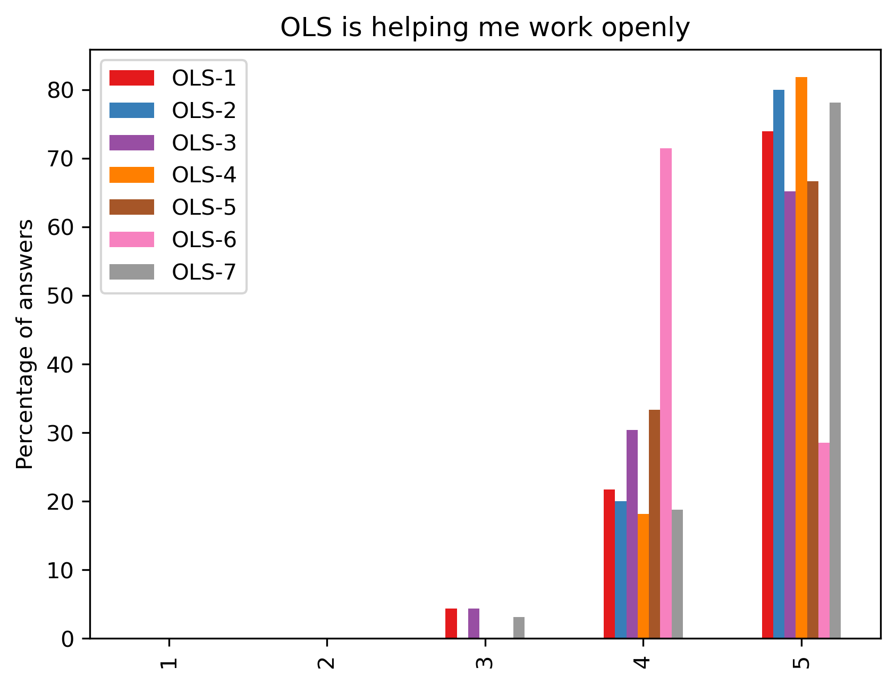
fig, ax = plt.subplots()
fig.set_dpi(300)
participant_mid_q1_df.mean(axis=1).plot.bar(ax=ax, color=colors['participants'])
plt.ylabel('Mean percentage of answers')
t = plt.title(col)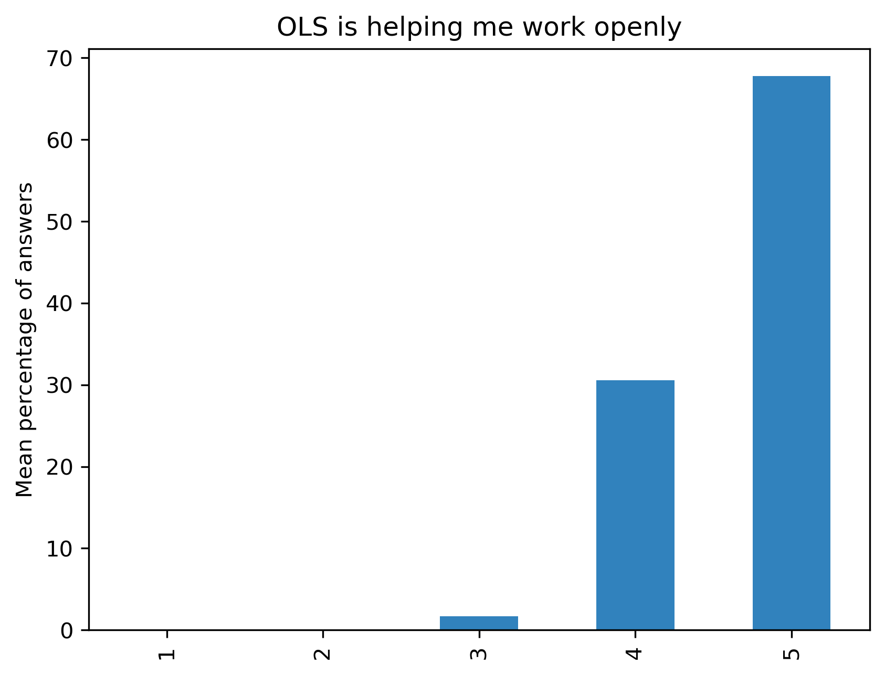
Range from 1 (Completely disagree) to 5 (Completely agree)
participant_mid_q2 = {}
other_answer = []
col = "OLS is helping me encourage others to work openly"
answers = list(range(1, 6))
for c in participant_mid_df:
participant_mid_q2[c], oa = get_question_possible_answers_counts(col, participant_mid_df[c], answers)
other_answer += oa
participant_mid_q2_df = pd.DataFrame.from_dict(participant_mid_q2)
participant_mid_q2_df| OLS-1 | OLS-2 | OLS-3 | OLS-4 | OLS-5 | OLS-6 | OLS-7 | |
|---|---|---|---|---|---|---|---|
| 1 | 0 | 0 | 0 | 0 | 0 | 0 | 0 |
| 2 | 0 | 0 | 0 | 0 | 0 | 0 | 0 |
| 3 | 1 | 0 | 2 | 0 | 2 | 1 | 3 |
| 4 | 7 | 8 | 7 | 2 | 11 | 6 | 7 |
| 5 | 15 | 7 | 14 | 9 | 20 | 7 | 22 |
participant_mid_q2_df = 100 * participant_mid_q2_df / participant_mid_q2_df.sum()fig, ax = plt.subplots()
fig.set_dpi(300)
participant_mid_q2_df.plot.bar(ax=ax, colormap='Set1')
plt.ylabel('Percentage of answers')
t = plt.title(col)
#plt.savefig('../', bbox_inches='tight')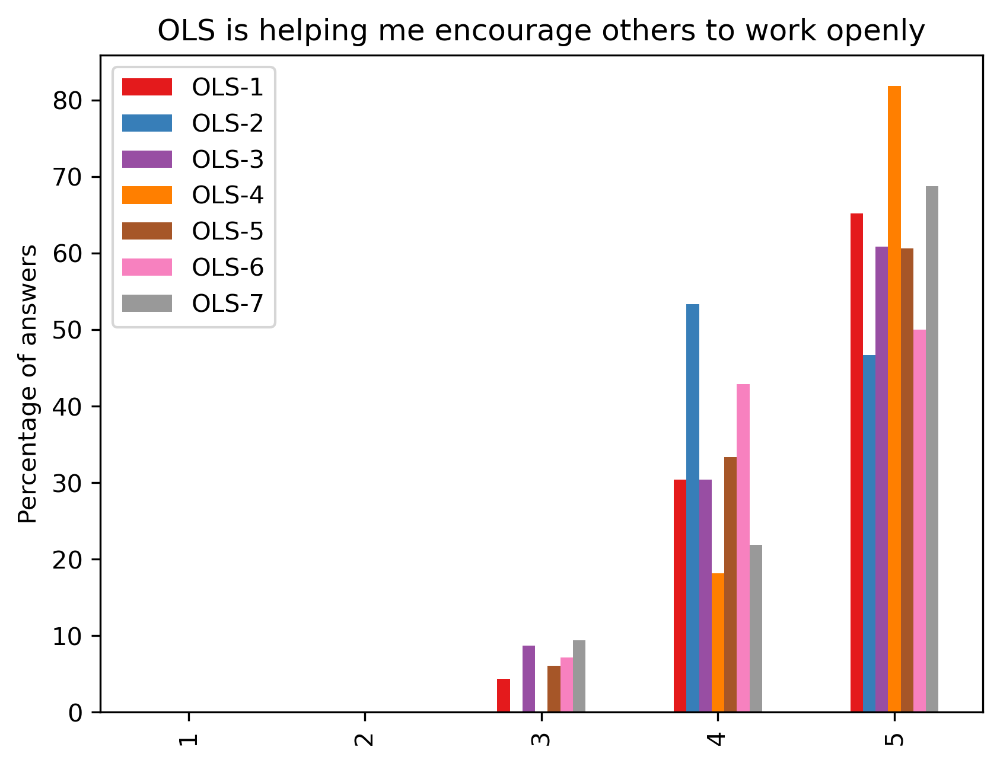
fig, ax = plt.subplots()
fig.set_dpi(300)
participant_mid_q2_df.mean(axis=1).plot.bar(ax=ax, color=colors['participants'])
plt.ylabel('Mean percentage of answers')
t = plt.title(col)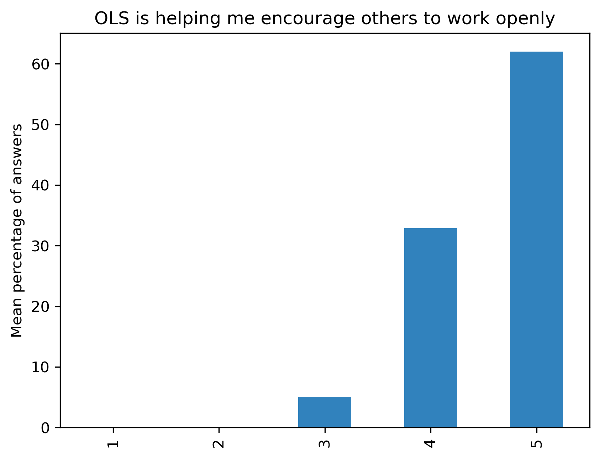
participant_mid_q3 = {}
other_answer = []
col = "Which of the following aspects of the cohort call work well?"
answers = [
"Information on before during and after the call",
"Introduction and icebreaker led by the hosts",
"Talks by the guest speakers",
"Breakout room activities",
"Shared note-taking",
"Opportunity to get to know others",
"All of the above",
"Other"]
for c in participant_mid_df:
participant_mid_q3[c], oa = get_mcq_possible_answers_counts(col, participant_mid_df[c], answers)
other_answer += oa
participant_mid_q3_df = pd.DataFrame.from_dict(participant_mid_q3)
participant_mid_q3_df| OLS-1 | OLS-2 | OLS-3 | OLS-4 | OLS-5 | OLS-6 | OLS-7 | |
|---|---|---|---|---|---|---|---|
| Information on before during and after the call | 11 | 7 | 18 | 7 | 21 | 5 | 17 |
| Introduction and icebreaker led by the hosts | 8 | 8 | 13 | 5 | 16 | 5 | 14 |
| Talks by the guest speakers | 11 | 9 | 20 | 7 | 23 | 6 | 15 |
| Breakout room activities | 9 | 4 | 7 | 4 | 11 | 4 | 7 |
| Shared note-taking | 11 | 4 | 18 | 4 | 16 | 6 | 9 |
| Opportunity to get to know others | 9 | 5 | 13 | 1 | 12 | 3 | 14 |
| All of the above | 12 | 8 | 5 | 4 | 9 | 8 | 14 |
| Other | 3 | 1 | 4 | 0 | 1 | 1 | 2 |
Other answers:
other_answer['Side chats on twitter by members.',
"I like the engagement feeling. It's not a webinar where one can fall asleep",
'Shared insights by the mentor on the answers shared by the mentee',
"Wasn't the shared note taking on HackMD? It's also on gDocs?",
'Written breakout room activities',
'Having spoken and written spaces',
'Recording the call and making it available on YouTube',
'Mentorship by mentors',
'Love the trainings!',
'calls are recorded so i can watch later (I am in an odd timezone)',
'practice how to work with other people',
'Learning from others ']participant_mid_q3_df = 100 * participant_mid_q3_df / participant_mid_q3_df.sum()fig, ax = plt.subplots()
fig.set_dpi(300)
participant_mid_q3_df.plot.barh(ax=ax, colormap='Set1')
plt.xlabel('Percentage of answers')
plt.gca().invert_yaxis()
t = plt.title(col)
#plt.savefig('../', bbox_inches='tight')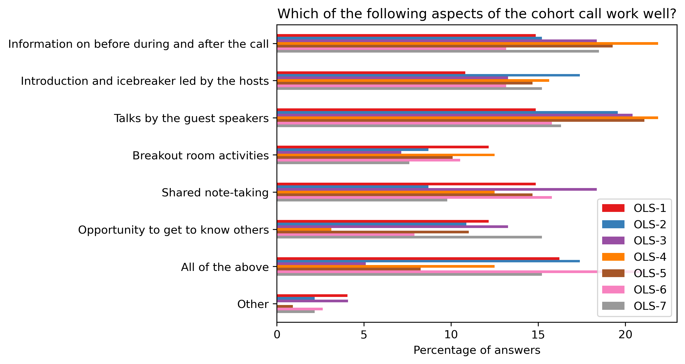
fig, ax = plt.subplots()
fig.set_dpi(300)
participant_mid_q3_df.mean(axis=1).plot.barh(ax=ax, color=colors['participants'])
plt.xlabel('Mean percentage of answers')
plt.gca().invert_yaxis()
t = plt.title(col)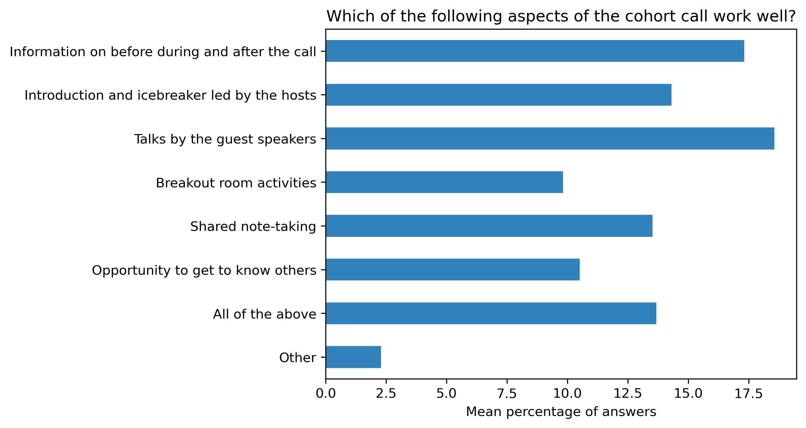
participant_mid_q4 = {}
other_answer = []
col = "Which of the following aspects of the cohort call work well?"
answers = [
"Information on before during and after the call",
"Introduction and icebreaker led by the hosts",
"Talks by the guest speakers",
"Breakout room activities",
"Shared note-taking",
"Opportunity to get to know others",
"All of the above",
"Other"]
for c in participant_mid_df:
participant_mid_q4[c], oa = get_mcq_possible_answers_counts(col, participant_mid_df[c], answers)
other_answer += oa
participant_mid_q4_df = pd.DataFrame.from_dict(participant_mid_q4)
participant_mid_q4_df| OLS-1 | OLS-2 | OLS-3 | OLS-4 | OLS-5 | OLS-6 | OLS-7 | |
|---|---|---|---|---|---|---|---|
| Information on before during and after the call | 11 | 7 | 18 | 7 | 21 | 5 | 17 |
| Introduction and icebreaker led by the hosts | 8 | 8 | 13 | 5 | 16 | 5 | 14 |
| Talks by the guest speakers | 11 | 9 | 20 | 7 | 23 | 6 | 15 |
| Breakout room activities | 9 | 4 | 7 | 4 | 11 | 4 | 7 |
| Shared note-taking | 11 | 4 | 18 | 4 | 16 | 6 | 9 |
| Opportunity to get to know others | 9 | 5 | 13 | 1 | 12 | 3 | 14 |
| All of the above | 12 | 8 | 5 | 4 | 9 | 8 | 14 |
| Other | 3 | 1 | 4 | 0 | 1 | 1 | 2 |
Other answers:
other_answer['Side chats on twitter by members.',
"I like the engagement feeling. It's not a webinar where one can fall asleep",
'Shared insights by the mentor on the answers shared by the mentee',
"Wasn't the shared note taking on HackMD? It's also on gDocs?",
'Written breakout room activities',
'Having spoken and written spaces',
'Recording the call and making it available on YouTube',
'Mentorship by mentors',
'Love the trainings!',
'calls are recorded so i can watch later (I am in an odd timezone)',
'practice how to work with other people',
'Learning from others ']participant_mid_q4_df = 100 * participant_mid_q4_df / participant_mid_q4_df.sum()fig, ax = plt.subplots()
fig.set_dpi(300)
participant_mid_q4_df.plot.barh(ax=ax, colormap='Set1')
plt.xlabel('Percentage of answers')
plt.gca().invert_yaxis()
plt.title(col)
#plt.savefig('../', bbox_inches='tight')Text(0.5, 1.0, 'Which of the following aspects of the cohort call work well?')fig, ax = plt.subplots()
fig.set_dpi(300)
participant_mid_q4_df.mean(axis=1).plot.barh(ax=ax, color=colors['participants'])
plt.xlabel('Mean percentage of answers')
plt.gca().invert_yaxis()
t = plt.title(col)participant_mid_q5 = {}
other_answer = []
col = "Which of the following statements is true regarding the usefulness of the topics introduced at the OLS?"
answers = [
"I have been able to use ALL concepts introduced at OLS so far",
"I have been able to use MOST concepts introduced at OLS so far",
"I have been able to use SOME concepts introduced at OLS so far",
"I have been able to use VERY FEW concepts introduced at OLS so far",
"I have NOT been able to use any concepts introduced at OLS so far"]
for c in participant_mid_df:
participant_mid_q5[c], oa = get_question_possible_answers_counts(col, participant_mid_df[c], answers)
other_answer += oa
participant_mid_q5_df = pd.DataFrame.from_dict(participant_mid_q5)
participant_mid_q5_df| OLS-1 | OLS-2 | OLS-3 | OLS-4 | OLS-5 | OLS-6 | OLS-7 | |
|---|---|---|---|---|---|---|---|
| I have been able to use ALL concepts introduced at OLS so far | 1 | 0 | 6 | 0 | 6 | 2 | 0 |
| I have been able to use MOST concepts introduced at OLS so far | 16 | 9 | 10 | 8 | 13 | 7 | 16 |
| I have been able to use SOME concepts introduced at OLS so far | 6 | 6 | 7 | 3 | 14 | 5 | 15 |
| I have been able to use VERY FEW concepts introduced at OLS so far | 0 | 0 | 0 | 0 | 0 | 0 | 1 |
| I have NOT been able to use any concepts introduced at OLS so far | 0 | 0 | 0 | 0 | 0 | 0 | 0 |
participant_mid_q5_df = 100 * participant_mid_q5_df / participant_mid_q5_df.sum()fig, ax = plt.subplots()
fig.set_dpi(300)
participant_mid_q5_df.plot.barh(ax=ax, colormap='Set1')
plt.xlabel('Percentage of answers')
plt.gca().invert_yaxis()
plt.title(col)
#plt.savefig('../', bbox_inches='tight')Text(0.5, 1.0, 'Which of the following statements is true regarding the usefulness of the topics introduced at the OLS?')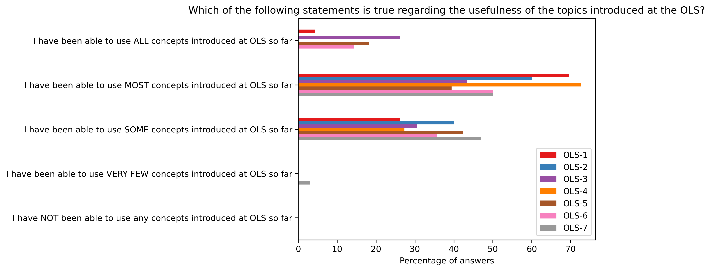
fig, ax = plt.subplots()
fig.set_dpi(300)
participant_mid_q5_df.mean(axis=1).plot.barh(ax=ax, color=colors['participants'])
plt.xlabel('Mean percentage of answers')
plt.gca().invert_yaxis()
plt.title(col)Text(0.5, 1.0, 'Which of the following statements is true regarding the usefulness of the topics introduced at the OLS?')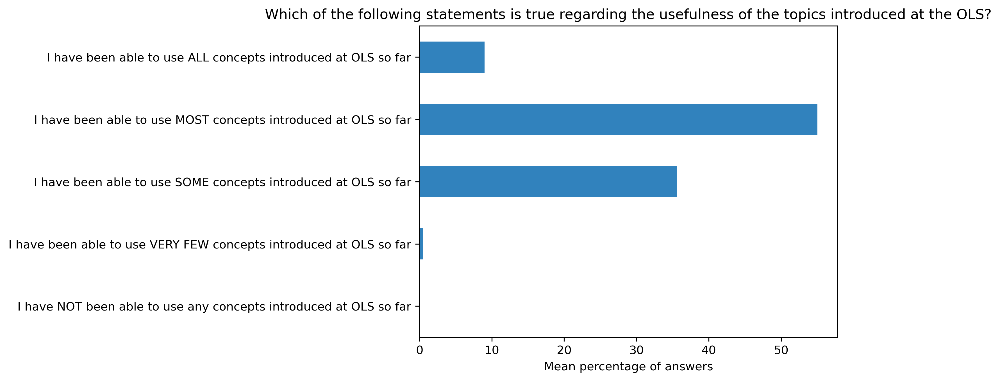
participant_mid_q6 = {}
other_answer = []
col = "How much time do you spend on assignments on average? (not meetings)"
answers = [
"<1 hour / week",
"1-2 hours / week",
"2-3 hours / week",
"3+ hours / week",
"Other"]
for c in participant_mid_df:
participant_mid_q6[c], oa = get_question_possible_answers_counts(col, participant_mid_df[c], answers)
other_answer += oa
participant_mid_q6_df = pd.DataFrame.from_dict(participant_mid_q6)
participant_mid_q6_df| OLS-1 | OLS-2 | OLS-3 | OLS-4 | OLS-5 | OLS-6 | OLS-7 | |
|---|---|---|---|---|---|---|---|
| <1 hour / week | 7 | 0 | 5 | 2 | 6 | 1 | 3 |
| 1-2 hours / week | 8 | 8 | 11 | 7 | 20 | 9 | 13 |
| 2-3 hours / week | 4 | 2 | 4 | 2 | 4 | 0 | 11 |
| 3+ hours / week | 1 | 4 | 2 | 0 | 2 | 3 | 5 |
| Other | 3 | 1 | 1 | 0 | 1 | 1 | 0 |
Other answers:
other_answer['I usually read more on the assignments and materials during my free hours. I am not sure how many hours I spend on them though.',
"As I'm severely behind schedule with my project work at the moment (extensive work travelling followed by the current chaotic situation), I can't answer this and the previous question reliably. I'm sure I'll use (almost) ALL the concepts introduced as soon as I'll manage catching up. I've been spending 0-2 hours / week with the assignments, but I would have needed / will need much more time to keep up.",
'1-2 hours / week the weeks before situation got crazy in Spain (first week of March)',
"Hard to say as some weeks were a lot and then some weeks I didn't do the homeworks",
'1 hr / week sometimes + <1 hr / week some time depending upon the commitments or assignments',
'',
'"some" hours when I can, unfortunately not on a regular basis']participant_mid_q6_df = 100 * participant_mid_q6_df / participant_mid_q6_df.sum()fig, ax = plt.subplots()
fig.set_dpi(300)
participant_mid_q6_df.plot.barh(ax=ax, colormap='Set1')
plt.xlabel('Percentage of answers')
plt.gca().invert_yaxis()
t = plt.title(col)
#plt.savefig('../', bbox_inches='tight')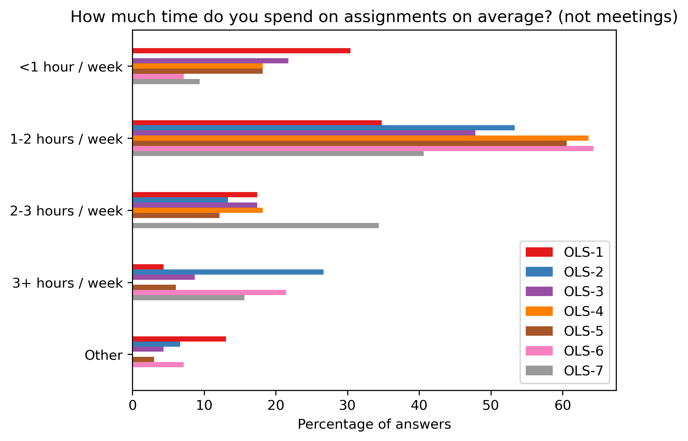
fig, ax = plt.subplots()
fig.set_dpi(300)
participant_mid_q6_df.mean(axis=1).plot.barh(ax=ax, color=colors['participants'])
plt.xlabel('Mean percentage of answers')
plt.gca().invert_yaxis()
t = plt.title(col)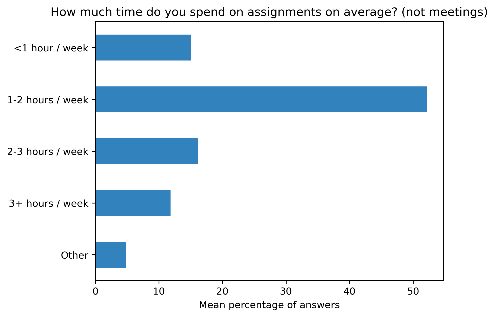
participant_mid_q7 = {}
other_answer = []
col = "Which of the following mode of communication you find most effective?"
answers = [
"Weekly emails from the organisers",
"Slack channels to connect with others",
"Google groups for tracking weekly information",
"Website with links to various resources",
"All of the above",
"Other"]
for c in participant_mid_df:
participant_mid_q7[c], oa = get_mcq_possible_answers_counts(col, participant_mid_df[c], answers)
other_answer += oa
participant_mid_q7_df = pd.DataFrame.from_dict(participant_mid_q7)
participant_mid_q7_df| OLS-1 | OLS-2 | OLS-3 | OLS-4 | OLS-5 | OLS-6 | OLS-7 | |
|---|---|---|---|---|---|---|---|
| Weekly emails from the organisers | 17 | 11 | 20 | 11 | 25 | 8 | 26 |
| Slack channels to connect with others | 0 | 0 | 9 | 6 | 18 | 3 | 17 |
| Google groups for tracking weekly information | 5 | 3 | 3 | 0 | 3 | 0 | 2 |
| Website with links to various resources | 11 | 9 | 13 | 5 | 14 | 2 | 12 |
| All of the above | 5 | 0 | 1 | 0 | 5 | 5 | 3 |
| Other | 8 | 5 | 0 | 2 | 2 | 0 | 2 |
Other answers:
other_answer['Gitter channel to connect with others',
'I think there might be too many methods of communication about OLS? Sometimes I have a hard time finding information about something specific',
"especially if it's in a Google Doc from a cohort call. ",
'Slack channel',
'Slack',
'Slack instead of Gitter',
'youtube recorded cohort-calls',
"I didn't use Gitter nor the Google Groups. Slack is pretty useful and the weekly emails too. The website & GitHub are helpful as well.",
'I miss some live/online meetings to get to know people',
'not via tools.',
'Review notes from mentor mentors',
'',
'Whatsapp ',
'OLS Calendar']participant_mid_q7_df = 100 * participant_mid_q7_df / participant_mid_q7_df.sum()fig, ax = plt.subplots()
fig.set_dpi(300)
participant_mid_q7_df.plot.barh(ax=ax, colormap='Set1')
plt.xlabel('Percentage of answers')
plt.gca().invert_yaxis()
t = plt.title(col)
#plt.savefig('../', bbox_inches='tight')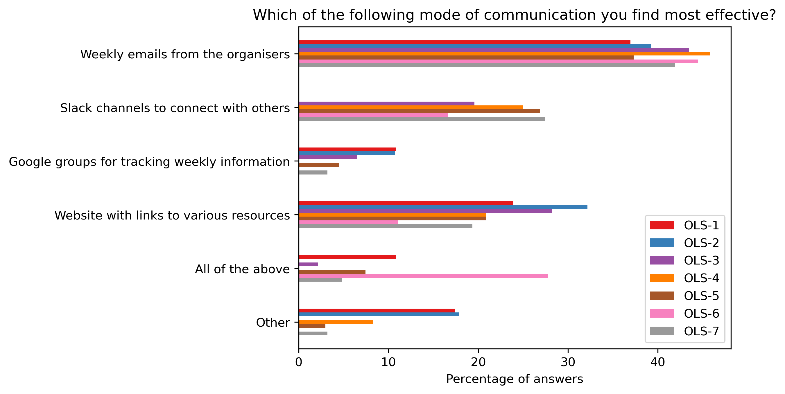
fig, ax = plt.subplots()
fig.set_dpi(300)
participant_mid_q7_df.mean(axis=1).plot.barh(ax=ax, color=colors['participants'])
plt.xlabel('Mean percentage of answers')
plt.gca().invert_yaxis()
t = plt.title(col)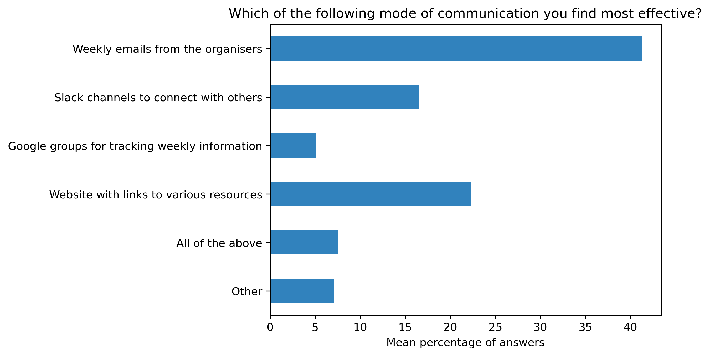
participant_mid_q8 = {}
other_answer = []
col = "How many cohort calls have been able to attend or watch in this round?"
answers = [
"I have attended all the cohort calls so far",
"I have attended 1-2 cohort calls and watched the missed call on YouTube",
"I watched all the cohort calls on YouTube but have not attended any call so far",
"I have yet to watch all the cohort call videos",
"Other"]
for c in participant_mid_df:
if col in participant_mid_df[c]:
participant_mid_q8[c], oa = get_mcq_possible_answers_counts(col, participant_mid_df[c], answers)
other_answer += oa
participant_mid_q8_df = pd.DataFrame.from_dict(participant_mid_q8)
participant_mid_q8_df| OLS-3 | OLS-4 | OLS-5 | OLS-6 | OLS-7 | |
|---|---|---|---|---|---|
| I have attended all the cohort calls so far | 6 | 3 | 3 | 2 | 0 |
| I have attended 1-2 cohort calls and watched the missed call on YouTube | 14 | 8 | 20 | 10 | 23 |
| I watched all the cohort calls on YouTube but have not attended any call so far | 0 | 0 | 5 | 1 | 2 |
| I have yet to watch all the cohort call videos | 1 | 0 | 1 | 0 | 1 |
| Other | 4 | 0 | 5 | 1 | 9 |
Other answers:
other_answer['I have attended all the cohort calls except one',
'which I watched on YouTube',
'I have attended 4 cohort calls',
'and watched the missed call on YouTube',
'I have attended all except one',
'I have missed two cohort calls and watched the missed one on YouTube',
"I've been able to join most cohort calls",
'but have caught up on some missed sessions on YouTube.',
'I have attended all calls except one',
'3-4 cohort calls and the rest on Youtube',
'Attended 3 calls and watched the missed call on youtube. ',
'I have missed 2 cohort calls and watched the call on YouTube',
'i have attended most of the cohort calls ',
"I was not able to attend the first call or last week's call. ",
'I have attended 3 cohort calls',
'and watched the missed call on YouTube',
'I have attended more than 2 cohort calls',
'and watched some missed calls on YouTube but there are some of them that I have yet to watch',
'i have attended in most cohort calls and watched 2 on youtube ']participant_mid_q8_df = 100 * participant_mid_q8_df / participant_mid_q8_df.sum()fig, ax = plt.subplots()
fig.set_dpi(300)
participant_mid_q8_df.plot.barh(ax=ax, colormap='Set1')
plt.xlabel('Percentage of answers')
plt.gca().invert_yaxis()
t = plt.title(col)
#plt.savefig('../', bbox_inches='tight')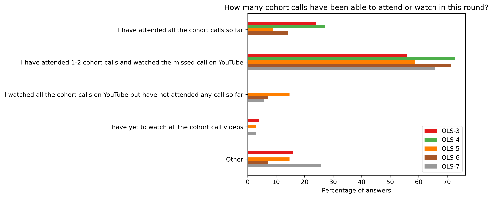
fig, ax = plt.subplots()
fig.set_dpi(300)
participant_mid_q8_df.mean(axis=1).plot.barh(ax=ax, color=colors['participants'])
plt.xlabel('Mean percentage of answers')
plt.gca().invert_yaxis()
t = plt.title(col)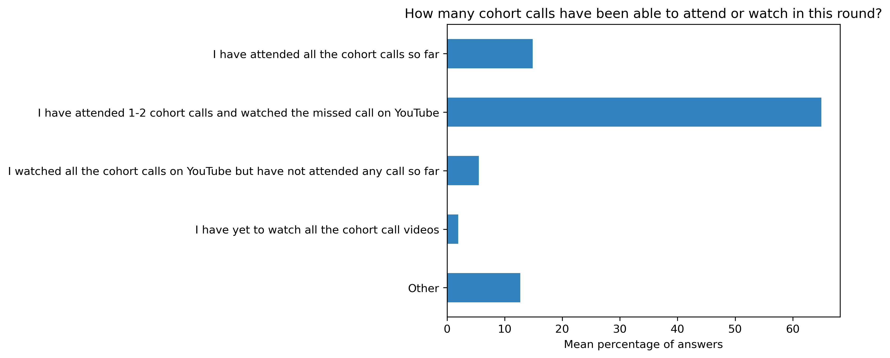
Range from 1 (Not at all) to 5 (Completely)
participant_mid_q9 = {}
other_answer = []
col = "To what extent did your mentor meet your expectations?"
answers = list(range(1, 6))
for c in participant_mid_df:
participant_mid_q9[c], oa = get_question_possible_answers_counts(col, participant_mid_df[c], answers)
other_answer += oa
participant_mid_q9_df = pd.DataFrame.from_dict(participant_mid_q9)
participant_mid_q9_df| OLS-1 | OLS-2 | OLS-3 | OLS-4 | OLS-5 | OLS-6 | OLS-7 | |
|---|---|---|---|---|---|---|---|
| 1 | 0 | 0 | 0 | 0 | 0 | 0 | 1 |
| 2 | 0 | 0 | 0 | 0 | 1 | 0 | 0 |
| 3 | 1 | 1 | 0 | 0 | 1 | 0 | 1 |
| 4 | 6 | 6 | 5 | 4 | 11 | 7 | 5 |
| 5 | 16 | 8 | 18 | 7 | 20 | 7 | 25 |
participant_mid_q9_df = 100 * participant_mid_q9_df / participant_mid_q9_df.sum()fig, ax = plt.subplots()
fig.set_dpi(300)
participant_mid_q9_df.plot.bar(ax=ax, colormap='Set1')
plt.ylabel('Percentage of answers')
t = plt.title(col)
#plt.savefig('../', bbox_inches='tight')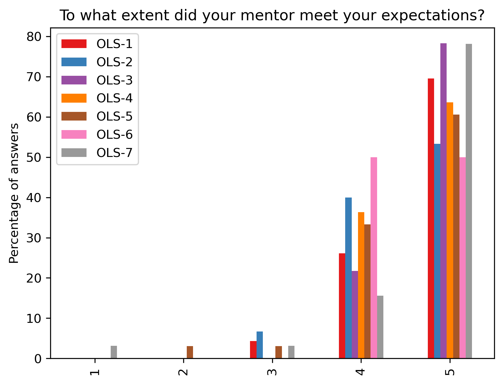
fig, ax = plt.subplots()
fig.set_dpi(300)
participant_mid_q9_df.mean(axis=1).plot.bar(ax=ax, color=colors['participants'])
plt.ylabel('Mean percentage of answers')
t = plt.title(col)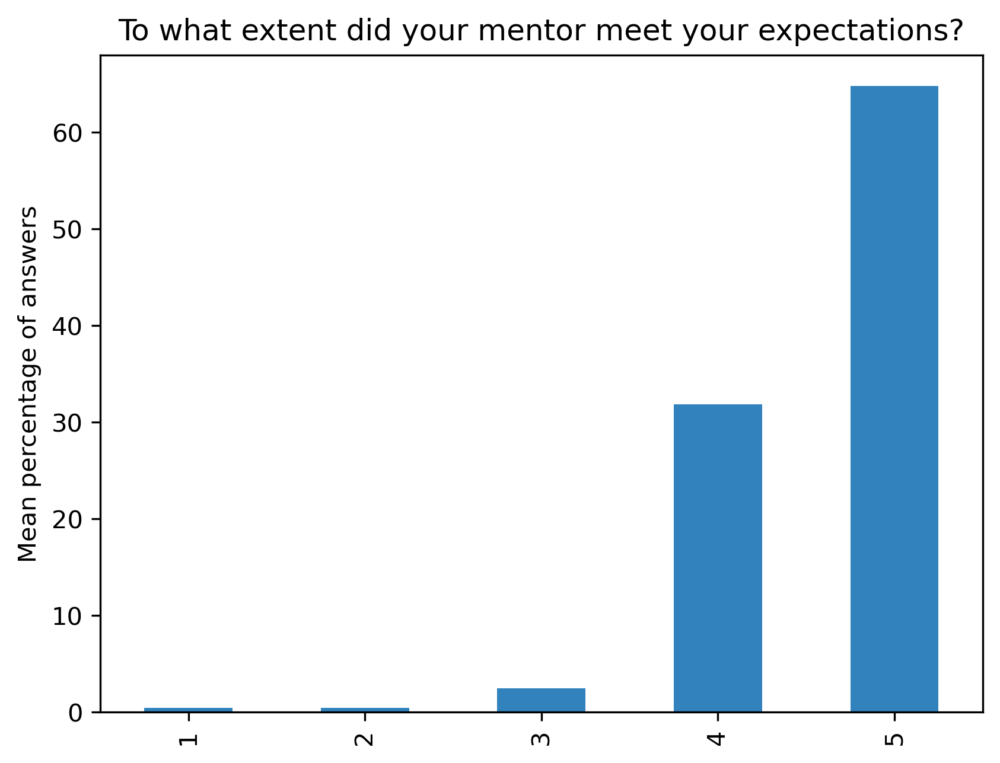
participant_mid_q10 = {}
other_answer = []
col = "Would you like to work with your mentor in future?"
answers = ["Yes", "No", "Maybe"]
for c in participant_mid_df:
participant_mid_q10[c], oa = get_question_possible_answers_counts(col, participant_mid_df[c], answers)
other_answer += oa
participant_mid_q10_df = pd.DataFrame.from_dict(participant_mid_q10)
participant_mid_q10_df| OLS-1 | OLS-2 | OLS-3 | OLS-4 | OLS-5 | OLS-6 | OLS-7 | |
|---|---|---|---|---|---|---|---|
| Yes | 19 | 13 | 18 | 7 | 27 | 12 | 30 |
| No | 1 | 0 | 0 | 0 | 0 | 0 | 1 |
| Maybe | 3 | 2 | 5 | 4 | 6 | 2 | 1 |
participant_mid_q10_df = 100 * participant_mid_q10_df / participant_mid_q10_df.sum()fig, ax = plt.subplots()
fig.set_dpi(300)
participant_mid_q10_df.plot.bar(ax=ax, colormap='Set1')
plt.ylabel('Percentage of answers')
t = plt.title(col)
#plt.savefig('../', bbox_inches='tight')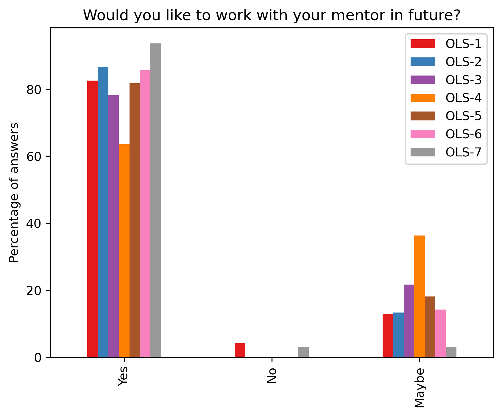
fig, ax = plt.subplots()
fig.set_dpi(300)
participant_mid_q10_df.mean(axis=1).plot.bar(ax=ax, color=colors['participants'])
plt.ylabel('Mean percentage of answers')
t = plt.title(col)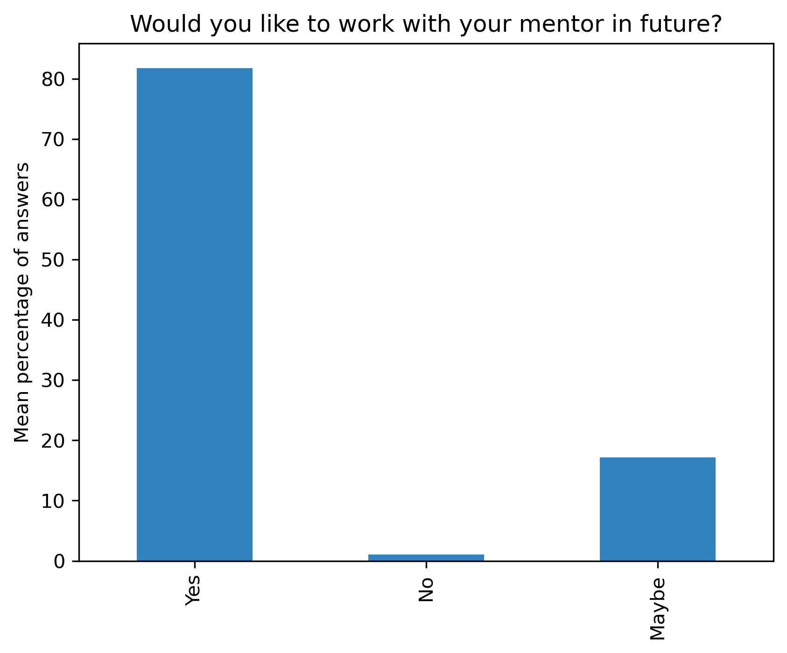
fig, ax = plt.subplots()
fig.set_dpi(300)
participant_mid_q10_df.mean(axis=1).plot.pie()
t = plt.title(col)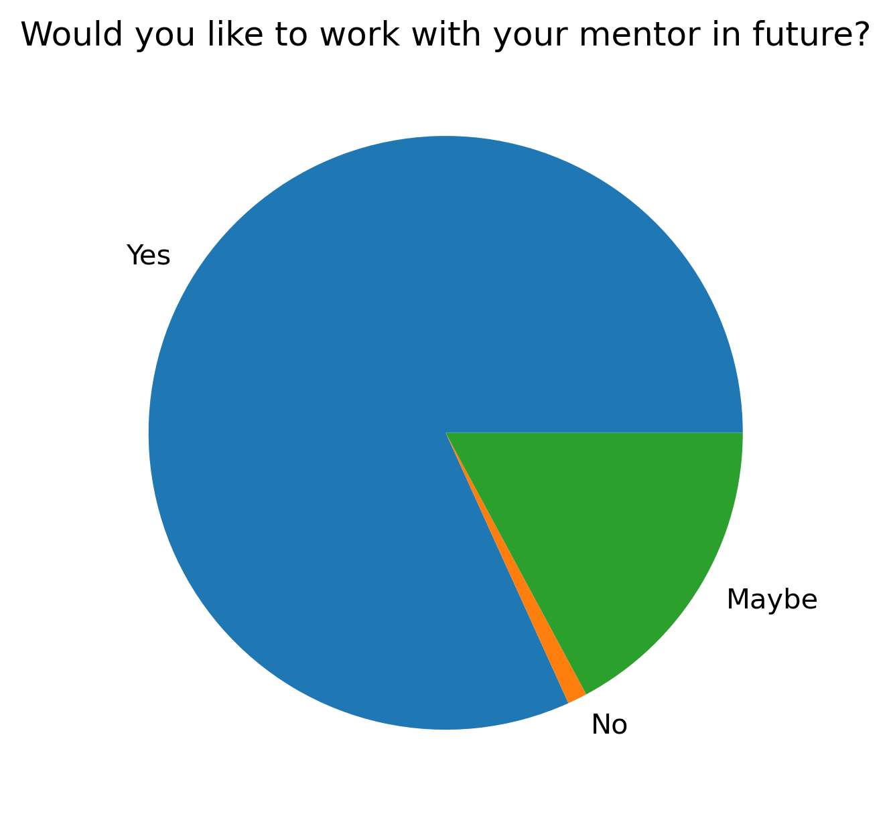
url = "https://docs.google.com/spreadsheets/d/1TlJ8_m1G4vLz0FH_IEgTGqjeQNvH8IYk0RM3wzaYanQ/export?format=csv"
cohort_gid = {
'OLS-1': '1016086495',
'OLS-2': '1605575560',
'OLS-3': '1197781372',
'OLS-4': '992604217',
'OLS-5': '0',
'OLS-6': '1071501789',
'OLS-7': '792445015'
}participant_df = {}
for c in cohort_gid:
participant_df[c] = (pd.read_csv(f"{url}&gid={cohort_gid[c]}")
.dropna(axis=1,how='all')
.fillna("")
.replace(c, "cohort", regex=True)
# q1
.replace("I was able to meet ALL my project goals", "I was able to meet ALL my goals", regex=True)
.replace("I worked consistently on my project, and met part of my goals", "I was able to meet MOST of my goals", regex=True)
.replace("I was able to meet MOST of my goals.", "I was able to meet MOST of my goals", regex=True)
# q4
## renaming (see below)
.replace("Tooling and Roadmapping \(open canvas, project vision etc\.\)", "Project Roadmapping, Open Canvas", regex=True)
.replace("Licensing and Code of Conduct", "Open Licensing, Code of Conduct", regex=True)
.replace("GitHub and README files", "README, GitHub Introduction", regex=True)
.replace("Project development: Agile and iterative project management methods & Open Aspects", "Agile & Iteractive Project Management", regex=True)
.replace("Knowledge Dissemination: Preprints, Training and Code Publishing", "Open Access Publication, Open Educational Resources, Open Source Software", regex=True)
.replace("Data management plans, software citation", "Open Data", regex=True)
.replace("Citizen Science", "Open Engagement of Social Actors", regex=True)
.replace("citizen science", "Open Engagement of Social Actors", regex=True)
.replace("Diversity & Inclusion", "Equity Diversity & Inclusion (EDI)", regex=True)
.replace("Mountain of engagement and Community interactions", "Mountain of Engagement, Community Interactions", regex=True)
.replace("Persona and pathways and inviting contributions", "Personas & Pathways", regex=True)
.replace("Mental health, self care, personal ecology", "Personal Ecology", regex=True)
.replace("Ally skills", "Ally Skills for Open Leaders", regex=True)
.replace("Open Leadership: Career Guidance call", "Open Leadership in Practice", regex=True)
.replace("Open office/co-working hours and social calls", "Open office/co-working hours and social calls", regex=True)
.replace("Final presentation rehearsals", "Graduation rehearsals", regex=True)
.replace("Final presentation call \(open and live streamed\)", "Graduations", regex=True)
## cleaning
.replace("Tooling and Roadmapping \(\)", "Project Roadmapping, Open Canvas", regex=True)
#.replace("Tooling and Roadmapping(open canvas, project vision etc.)", "Project Roadmapping, Open Canvas", regex=True)
.replace("Designing for inclusion: Implicit bias", "Community Design for Inclusivity", regex=True)
.replace("Diversity and Inclusion", "Equity Diversity & Inclusion (EDI)", regex=True)
.replace("Preprints", "Open Access Publication", regex=True)
.replace("open protocols", "Open Evaluation", regex=True)
.replace("Knowledge Dissemination: Citizen science", "Open Engagement of Social Actors", regex=True)
.replace("Knowledge Dissemination: open education", "Open Educational Resources", regex=True)
.replace("Knowledge Dissemination: Open Access Publication", "Open Access Publication", regex=True)
.replace("open education", "Open Educational Resources", regex=True)
.replace("Open agenda and social calls", "Open office/co-working hours and social calls", regex=True)
.replace("Career Guidance calls", "Open Leadership in Practice", regex=True)
.replace("Applying FAIR principles on research components", "Open Data", regex=True)
# q5
.replace("I am not sure yet, but ask me later when you have launched OLS-2", "I am not sure yet but ask me later", regex=True)
.replace("I am not sure yet, but ask me later when you have launched cohort", "I am not sure yet but ask me later", regex=True)
.replace("I am not sure yet, but ask me later", "I am not sure yet but ask me later", regex=True)
.replace("Yes I'd like to return as a collaborator to run an OLS cohort for my network", "Yes I'd like to return as a collaborator to run this program in my network", regex=True)
.replace("No, I would not be able to return to OLS-2", "No I would not be able to return", regex=True)
.replace("No, I would not be able to return to cohort", "No I would not be able to return", regex=True)
.replace("No, I would not be able to return to OLS-4", "No I would not be able to return", regex=True)
.replace("I would not be able to return to OLS-3 but I am hopeful to return to OLS-4 with an active role.", "I would take a break but please keep me informed about the next cohort", regex=True)
.replace("No, but only because I really would not have the time", "No I would not be able to return", regex=True)
.replace("Maybe in OLS-7?", "I would take a break but please keep me informed about the next cohort", regex=True)
)participant_q1 = {}
other_answer = []
col = "How was your overall project leadership experience in OLS?"
answers = [
"I was able to meet ALL my goals",
"I was able to meet MOST of my goals",
"I was able work on my project but only PARTIALLY",
"I was NOT able to work on my project idea",
"Other"]
for c in participant_df:
participant_q1[c], oa = get_mcq_possible_answers_counts(col, participant_df[c], answers)
other_answer += oa
participant_q1_df = pd.DataFrame.from_dict(participant_q1)
participant_q1_df| OLS-1 | OLS-2 | OLS-3 | OLS-4 | OLS-5 | OLS-6 | OLS-7 | |
|---|---|---|---|---|---|---|---|
| I was able to meet ALL my goals | 7 | 5 | 6 | 7 | 6 | 7 | 5 |
| I was able to meet MOST of my goals | 7 | 18 | 23 | 9 | 10 | 14 | 16 |
| I was able work on my project but only PARTIALLY | 7 | 9 | 6 | 3 | 7 | 9 | 10 |
| I was NOT able to work on my project idea | 0 | 0 | 0 | 0 | 0 | 0 | 0 |
| Other | 1 | 1 | 0 | 0 | 0 | 0 | 0 |
Other answers:
other_answer['Goals evolved as we learned but we were very productive ',
"I had some personal goals which were not completed - but that's fine :)"]participant_q1_df = 100 * participant_q1_df / participant_q1_df.sum()fig, ax = plt.subplots()
fig.set_dpi(300)
participant_q1_df.plot.barh(ax=ax, colormap='Set1')
plt.xlabel('Percentage of answers')
plt.gca().invert_yaxis()
t = plt.title(col)
#plt.savefig('../', bbox_inches='tight')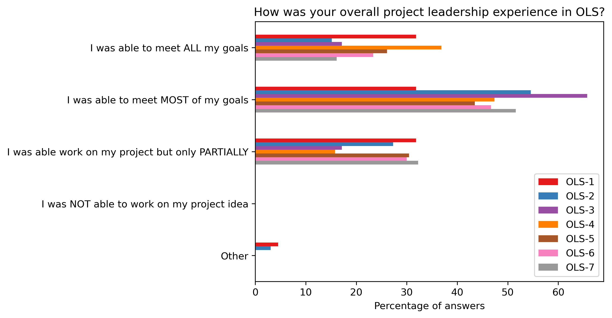
fig, ax = plt.subplots()
fig.set_dpi(300)
participant_q1_df.mean(axis=1).plot.barh(ax=ax, color=colors['participants'])
plt.xlabel('Mean percentage of answers')
plt.gca().invert_yaxis()
t = plt.title(col)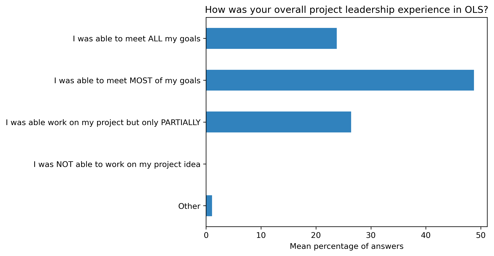
participant_q2 = {}
other_answer = []
col = "How was your overall experience with the mentor-mentee calls?"
answers = [
"Mentoring calls were always useful",
"Mentoring calls were mostly useful",
"Mentoring calls were somewhat useful",
"Mentoring calls were not useful"]
for c in participant_df:
participant_q2[c], oa = get_mcq_possible_answers_counts(col, participant_df[c], answers)
other_answer += oa
participant_q2_df = pd.DataFrame.from_dict(participant_q2)
participant_q2_df| OLS-1 | OLS-2 | OLS-3 | OLS-4 | OLS-5 | OLS-6 | OLS-7 | |
|---|---|---|---|---|---|---|---|
| Mentoring calls were always useful | 14 | 22 | 26 | 16 | 19 | 24 | 27 |
| Mentoring calls were mostly useful | 6 | 9 | 7 | 2 | 4 | 6 | 3 |
| Mentoring calls were somewhat useful | 2 | 1 | 2 | 1 | 1 | 1 | 1 |
| Mentoring calls were not useful | 0 | 0 | 0 | 0 | 0 | 0 | 0 |
participant_q2_df = 100 * participant_q2_df / participant_q2_df.sum()fig, ax = plt.subplots()
fig.set_dpi(300)
participant_q2_df.plot.barh(ax=ax, colormap='Set1')
plt.xlabel('Percentage of answers')
plt.gca().invert_yaxis()
t = plt.title(col)
#plt.savefig('../', bbox_inches='tight')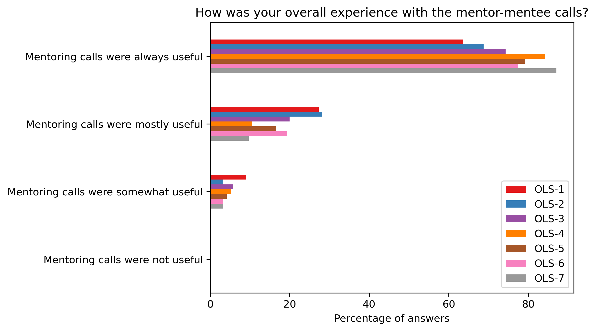
fig, ax = plt.subplots()
fig.set_dpi(300)
participant_q2_df.mean(axis=1).plot.barh(ax=ax, color=colors['participants'])
plt.xlabel('Mean percentage of answers')
plt.gca().invert_yaxis()
t = plt.title(col)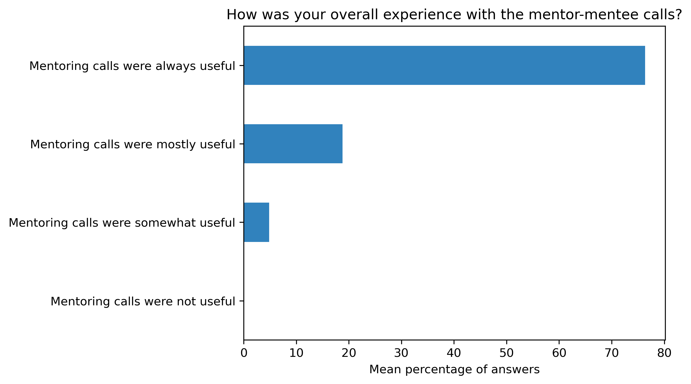
participant_q3 = {}
other_answer = []
col = "How was your overall experience with the cohort calls?"
answers = [
"They were always useful",
"They were mostly useful",
"They were somewhat useful",
"They were not useful for me",
"I could not attend"]
for c in participant_df:
participant_q3[c], oa = get_mcq_possible_answers_counts(col, participant_df[c], answers)
other_answer += oa
participant_q3_df = pd.DataFrame.from_dict(participant_q3)
participant_q3_df| OLS-1 | OLS-2 | OLS-3 | OLS-4 | OLS-5 | OLS-6 | OLS-7 | |
|---|---|---|---|---|---|---|---|
| They were always useful | 10 | 13 | 22 | 11 | 10 | 12 | 15 |
| They were mostly useful | 11 | 15 | 11 | 8 | 11 | 14 | 12 |
| They were somewhat useful | 1 | 5 | 2 | 0 | 2 | 4 | 3 |
| They were not useful for me | 0 | 0 | 1 | 0 | 0 | 0 | 0 |
| I could not attend | 0 | 0 | 0 | 0 | 0 | 1 | 2 |
participant_q3_df = 100 * participant_q3_df / participant_q3_df.sum()fig, ax = plt.subplots()
fig.set_dpi(300)
participant_q3_df.plot.barh(ax=ax, colormap='Set1')
plt.xlabel('Percentage of answers')
plt.gca().invert_yaxis()
t = plt.title(col)
#plt.savefig('../', bbox_inches='tight')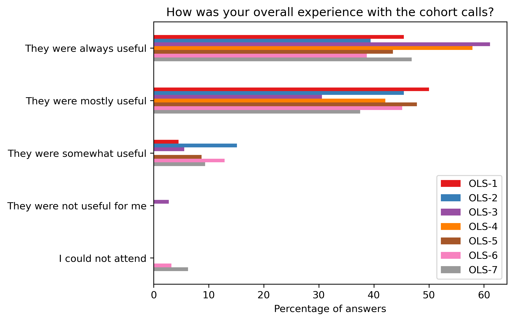
fig, ax = plt.subplots()
fig.set_dpi(300)
participant_q3_df.mean(axis=1).plot.barh(ax=ax, color=colors['participants'])
plt.xlabel('Mean percentage of answers')
plt.gca().invert_yaxis()
t = plt.title(col)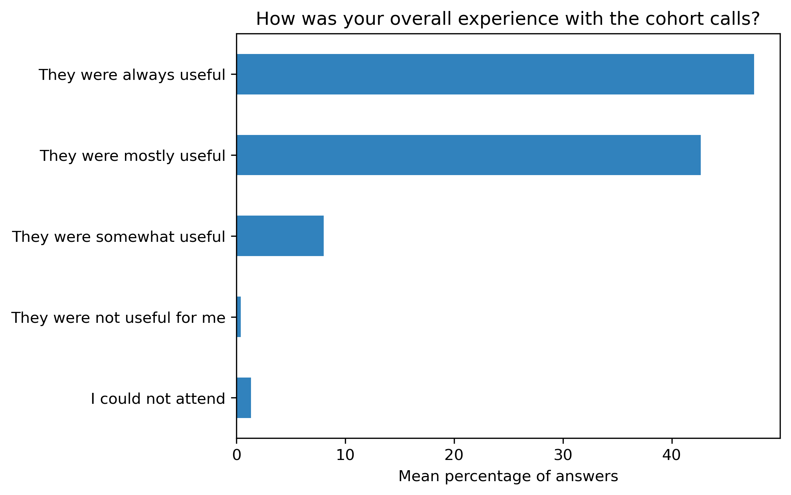
participant_q4 = {}
other_answer = []
col = "Which of the following topics introduced in these cohort calls were useful for your open science journey?"
answers = [
"OLS Introduction",
"Open Science Introduction",
"Open Source Software",
"Open Data",
"Open Access Publication",
"Open Science Infrastructures",
"Open Educational Resources",
"Open Engagement of Social Actors",
"Open Hardware",
"Open Evaluation",
"Openness to Diversity of Knowledge",
"Project Roadmapping",
"Open Canvas",
"Code of Conduct",
"GitHub Introduction",
"Open Licensing",
"README",
"Package Management",
"Setting up a project",
"Project Design for Collaboration",
"Good Coding Practices",
"Code Review",
"Agile & Iteractive Project Management",
"Community Design for Inclusivity",
"Community Interactions",
"Mountain of Engagement",
"Equity Diversity & Inclusion (EDI)",
"Ally Skills for Open Leaders",
"Personal Ecology",
"Personas & Pathways",
"Open Leadership in Practice",
"Open office/co-working hours and social calls",
"Graduation rehearsals",
"Graduations",
"Other"]
for c in participant_df:
participant_q4[c], oa = get_mcq_possible_answers_counts(col, participant_df[c], answers)
other_answer += oa
participant_q4_df = pd.DataFrame.from_dict(participant_q4)
participant_q4_df| OLS-1 | OLS-2 | OLS-3 | OLS-4 | OLS-5 | OLS-6 | OLS-7 | |
|---|---|---|---|---|---|---|---|
| OLS Introduction | 0 | 0 | 0 | 0 | 0 | 0 | 0 |
| Open Science Introduction | 0 | 0 | 0 | 0 | 0 | 0 | 0 |
| Open Source Software | 0 | 0 | 0 | 10 | 10 | 11 | 12 |
| Open Data | 0 | 22 | 22 | 10 | 7 | 11 | 14 |
| Open Access Publication | 13 | 23 | 23 | 10 | 10 | 11 | 12 |
| Open Science Infrastructures | 0 | 0 | 0 | 0 | 0 | 0 | 0 |
| Open Educational Resources | 13 | 23 | 0 | 10 | 10 | 11 | 12 |
| Open Engagement of Social Actors | 13 | 0 | 23 | 8 | 5 | 6 | 8 |
| Open Hardware | 0 | 0 | 0 | 0 | 0 | 0 | 0 |
| Open Evaluation | 13 | 23 | 23 | 0 | 0 | 0 | 0 |
| Openness to Diversity of Knowledge | 0 | 0 | 0 | 0 | 0 | 0 | 0 |
| Project Roadmapping | 20 | 30 | 27 | 18 | 21 | 24 | 27 |
| Open Canvas | 20 | 30 | 27 | 18 | 21 | 24 | 27 |
| Code of Conduct | 16 | 27 | 23 | 18 | 13 | 15 | 22 |
| GitHub Introduction | 14 | 26 | 21 | 13 | 18 | 21 | 23 |
| Open Licensing | 16 | 27 | 23 | 18 | 13 | 15 | 22 |
| README | 14 | 26 | 21 | 13 | 18 | 21 | 23 |
| Package Management | 0 | 0 | 0 | 0 | 0 | 0 | 0 |
| Setting up a project | 0 | 0 | 0 | 0 | 0 | 0 | 0 |
| Project Design for Collaboration | 0 | 0 | 0 | 0 | 0 | 0 | 0 |
| Good Coding Practices | 0 | 0 | 0 | 0 | 0 | 0 | 0 |
| Code Review | 0 | 0 | 0 | 0 | 0 | 0 | 0 |
| Agile & Iteractive Project Management | 13 | 17 | 21 | 11 | 12 | 16 | 16 |
| Community Design for Inclusivity | 18 | 26 | 20 | 0 | 0 | 0 | 0 |
| Community Interactions | 19 | 20 | 12 | 9 | 12 | 14 | 19 |
| Mountain of Engagement | 19 | 20 | 12 | 9 | 12 | 14 | 19 |
| Equity Diversity & Inclusion (EDI) | 18 | 26 | 20 | 10 | 11 | 12 | 22 |
| Ally Skills for Open Leaders | 12 | 20 | 10 | 13 | 5 | 6 | 16 |
| Personal Ecology | 13 | 21 | 16 | 10 | 9 | 11 | 17 |
| Personas & Pathways | 16 | 22 | 13 | 12 | 16 | 18 | 18 |
| Open Leadership in Practice | 7 | 13 | 10 | 12 | 9 | 9 | 14 |
| Open office/co-working hours and social calls | 12 | 9 | 10 | 6 | 7 | 8 | 8 |
| Graduation rehearsals | 11 | 16 | 15 | 13 | 7 | 8 | 16 |
| Graduations | 15 | 23 | 16 | 11 | 9 | 11 | 15 |
| Other | 0 | 7 | 0 | 3 | 0 | 1 | 4 |
Other answers:
other_answer['Breakout rooms were really nice exploit to get to know other participants and share experience. ',
"The ones I haven't ticked are mainly because I haven't caught up with them yet. Generally - all useful (in varying amounts). The less useful ones were only less useful because I knew a moderate amount about them already. Several",
'that I thought I knew a fair amount about',
"turns out I didn't / there was still a lot for me to learn!",
'Breakout rooms was so useful too.',
'As I read this list I am reminded on all I learnt and all I hope to read further into!',
"They were all useful! The ones I've ticked were just the particularly relevant ones at this stage.",
'Actually all were useful',
'those ones were just my favourite ones :)',
'I still need to watch some of the recordings',
"Can't accurately answer as haven't worked through all of the sessions",
'Social entreprise',
'hardware ',
'I have not been able to take advantage of the co-working due to a lack of time',
'but I would have liked to do it.']participant_q4_df = 100 * participant_q4_df / participant_q4_df.sum()fig, ax = plt.subplots()
fig.set_dpi(300)
participant_q4_df.plot.barh(ax=ax, colormap='Set1')
plt.xlabel('Percentage of answers')
plt.gca().invert_yaxis()
t = plt.title(col)
#plt.savefig('../', bbox_inches='tight')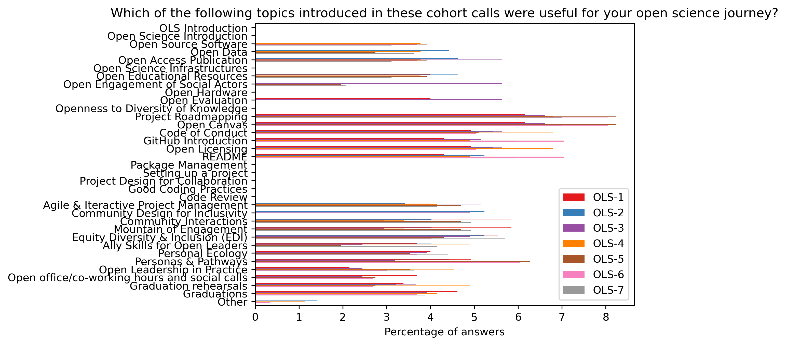
fig, ax = plt.subplots()
fig.set_dpi(300)
participant_q4_df.mean(axis=1).plot.barh(ax=ax, color=colors['participants'])
plt.xlabel('Mean percentage of answers')
plt.gca().invert_yaxis()
t = plt.title(col)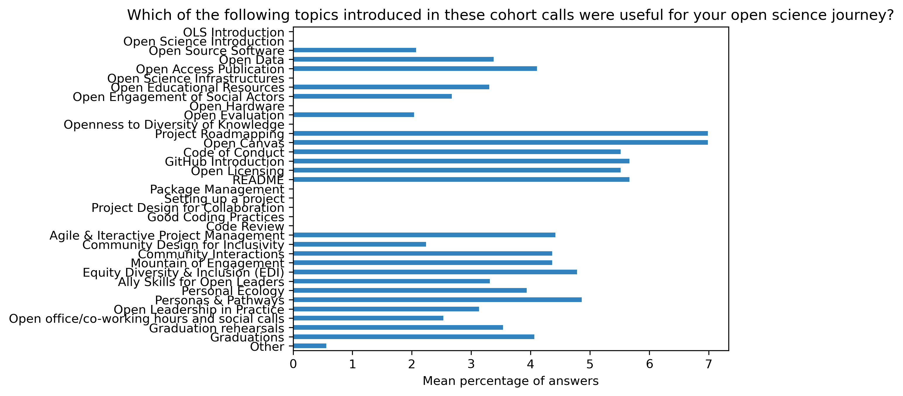
Group by topics
tag_topic_mapping = (pd.read_csv("https://docs.google.com/spreadsheets/d/1sDJLG8RuoShWUQN78lvx_mghBbGfusdzlb1WwYrCbjk/export?format=csv&gid=0")
.replace("Equity, Diversity and ", "Equity Diversity & ", regex=True)
.set_index("Tag")
.drop(columns=["Description", "Comments from Malvika"]))
extra_mapping = (pd.DataFrame({
'Tag':['Graduation rehearsals', 'Graduations', 'Open office/co-working hours and social calls', 'Other'],
'Topic':['Graduations','Graduations','Open office/co-working hours and social calls', 'Other']})
.set_index("Tag"))
tag_topic_mapping = pd.concat([tag_topic_mapping, extra_mapping])participant_q4_by_topic_df = (participant_q4_df.join(tag_topic_mapping)
.groupby(by="Topic")
.sum())fig, ax = plt.subplots()
fig.set_dpi(300)
participant_q4_by_topic_df.plot.barh(ax=ax, colormap='Set1')
plt.xlabel('Percentage of answers')
plt.gca().invert_yaxis()
plt.ylabel('')
t = plt.title(col)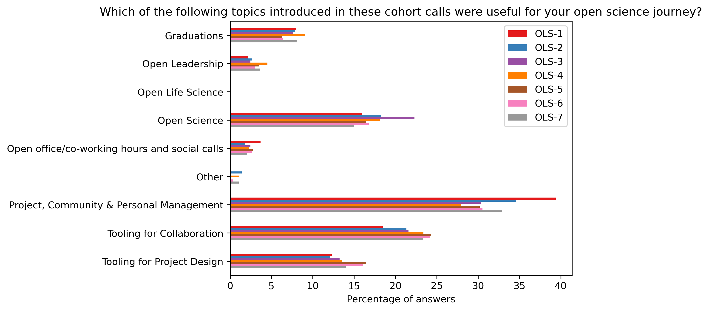
fig, ax = plt.subplots()
fig.set_dpi(300)
participant_q4_by_topic_df.mean(axis=1).plot.barh(ax=ax, color=colors['participants'])
plt.xlabel('Mean percentage of answers')
plt.ylabel('')
plt.gca().invert_yaxis()
t = plt.title(col)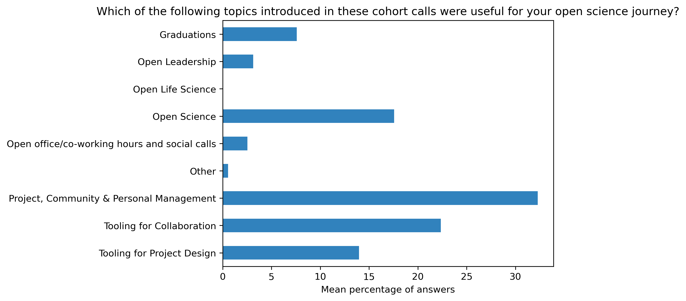
participant_q5 = {}
other_answer = []
col = "Would you be interested in joining as a mentor, call facilitator, or expert in the next cohort?"
answers = [
"Yes I'd like to return as a mentor",
"Yes I'd like to return as an expert",
"Yes I'd like to return as a call facilitator",
"Yes I'd like to return as a collaborator to run this program in my network",
"I am not sure yet but ask me later",
"I would take a break but please keep me informed about the next cohort",
"No I would not be able to return",
"Other"]
for c in participant_df:
participant_q5[c], oa = get_mcq_possible_answers_counts(col, participant_df[c], answers)
other_answer += oa
participant_q5_df = pd.DataFrame.from_dict(participant_q5)
participant_q5_df| OLS-1 | OLS-2 | OLS-3 | OLS-4 | OLS-5 | OLS-6 | OLS-7 | |
|---|---|---|---|---|---|---|---|
| Yes I'd like to return as a mentor | 7 | 12 | 5 | 9 | 9 | 9 | 15 |
| Yes I'd like to return as an expert | 1 | 6 | 4 | 7 | 4 | 6 | 7 |
| Yes I'd like to return as a call facilitator | 0 | 0 | 0 | 2 | 6 | 8 | 10 |
| Yes I'd like to return as a collaborator to run this program in my network | 5 | 4 | 5 | 1 | 6 | 9 | 4 |
| I am not sure yet but ask me later | 10 | 15 | 0 | 4 | 8 | 10 | 11 |
| I would take a break but please keep me informed about the next cohort | 0 | 1 | 0 | 0 | 0 | 0 | 0 |
| No I would not be able to return | 3 | 1 | 7 | 0 | 0 | 2 | 0 |
| Other | 7 | 13 | 21 | 9 | 8 | 4 | 6 |
Other answers:
other_answer['',
'I would like to receive mentoring training and I will be good to help a mentor in some of the mentoring work in either OLS-2 or subsequent cohorts.',
"I don't feel qualified yet",
'and I feel I would do a disservice to the mentee',
'definitely',
"tho depending on the role. I'd love to be a mentor but not sure my experience will be as useful to academics ",
"I'm not sure I have the skills as a mentor/expert?",
'Well',
'as a mentor or expert',
"but right now I'm crazy busy and need to focus on some work projects. I'm happy to do coordinate a coworking call for OLS-3 (or something similar which is low threshold) and I can be in the loop for OLS-4 or later for a mentor/expert role (I'm happily assuming it continues forever) ",
'I would like to return to OLS',
'as I need to prioritize some other aspects of my life/work this year. ',
'but probably not until next year at least',
'as I indicated)',
"I'd love to be involved in the future (e.g.",
'I am open to discussing further engagement but do not want to take on more than I am equipped to deliver.',
'I would love to but I dont think I have suffiecent expertise yet. ',
'I can find opportunity for improvements. Then I love to join as a mentor.',
'Not yet actually. I attended this project as a helper. My contribution was not much. I surely need to improve myself. Maybe after an individual attendence to a project for OLS-3',
'I would like to return as a mentor or expert but not in the next year since I promised myself to not commit to more projects. Please keep in touch though!',
'I am not sure yet but ask me later when you have launched OLS-4',
'I may join as a mentee cause ı need to learn more',
'still ! :)',
'Please contact me for OLS-5 :)',
'Maybe OLS-5. I will need to re-assimilate all I was taught in cohort',
'for OLS-4 or later (whatever can fit your )',
"Not sure whether I'm totally prepared for it",
"but I'd like to :)",
'No',
'I would not be able to return to OLS-5',
"I don't have much experience as an active OS community member or developer. I would feel comfortable with mentoring someone taking their first steps on programming or web dev.",
"I'd like to return as a mentor not now",
'but in the near future (e. g.',
'OLS-6)',
'I have applied for OLS-5 as a mentee to build my project further.',
'No',
'I would not be able to return to OLS-6',
'',
'I will return as a mentee',
'I would take a break but please keep me informed about the next cohort?',
'',
'I will return as a mentee',
'I would take a break but please keep me informed about the next cohort?',
'No',
'I would not be able to return to OLS-8',
"I don't know how but I'd like to stay involved!",
"I'd like to help but would need to know expected time allocations"]participant_q5_df = 100 * participant_q5_df / participant_q5_df.sum()fig, ax = plt.subplots()
fig.set_dpi(300)
participant_q5_df.plot.barh(ax=ax, colormap='Set1')
plt.xlabel('Percentage of answers')
plt.gca().invert_yaxis()
t = plt.title(col)
#plt.savefig('../', bbox_inches='tight')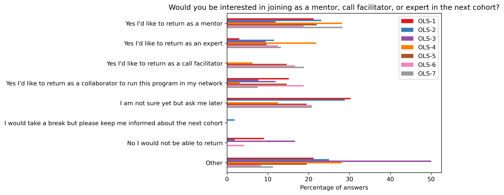
fig, ax = plt.subplots()
fig.set_dpi(300)
participant_q5_df.mean(axis=1).plot.barh(ax=ax, color=colors['participants'])
plt.xlabel('Mean percentage of answers')
plt.gca().invert_yaxis()
t = plt.title(col)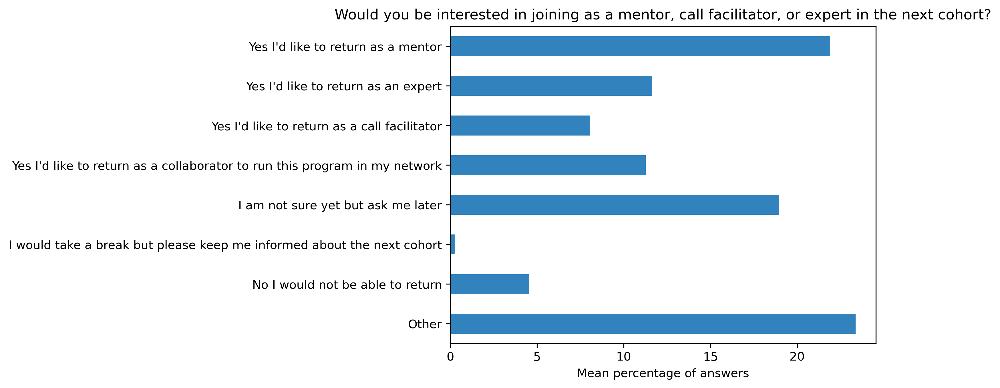
participant_q6 = {}
other_answer = []
col = "Would you recommend this program to others?"
answers = [
"Yes",
"Maybe",
"No"]
for c in participant_df:
participant_q6[c], oa = get_question_possible_answers_counts(col, participant_df[c], answers)
other_answer += oa
participant_q6_df = pd.DataFrame.from_dict(participant_q6)
participant_q6_df| OLS-1 | OLS-2 | OLS-3 | OLS-4 | OLS-5 | OLS-6 | OLS-7 | |
|---|---|---|---|---|---|---|---|
| Yes | 22 | 32 | 34 | 19 | 22 | 28 | 30 |
| Maybe | 0 | 0 | 0 | 0 | 1 | 2 | 1 |
| No | 0 | 0 | 1 | 0 | 0 | 0 | 0 |
participant_q6_df = 100 * participant_q6_df / participant_q6_df.sum()fig, ax = plt.subplots()
fig.set_dpi(300)
participant_q6_df.plot.bar(ax=ax, colormap='Set1')
plt.ylabel('Percentage of answers')
t = plt.title(col)
#plt.savefig('../', bbox_inches='tight')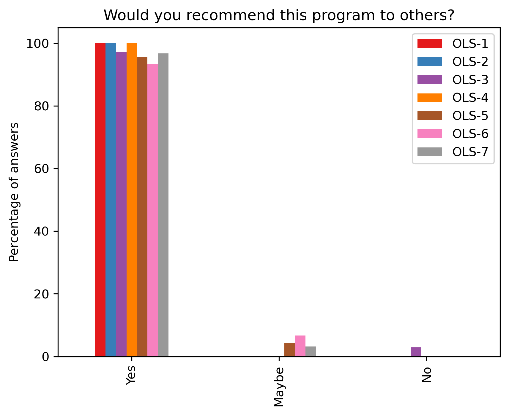
fig, ax = plt.subplots()
fig.set_dpi(300)
participant_q6_df.mean(axis=1).plot.bar(ax=ax, color=colors['participants'])
plt.ylabel('Mean percentage of answers')
t = plt.title(col)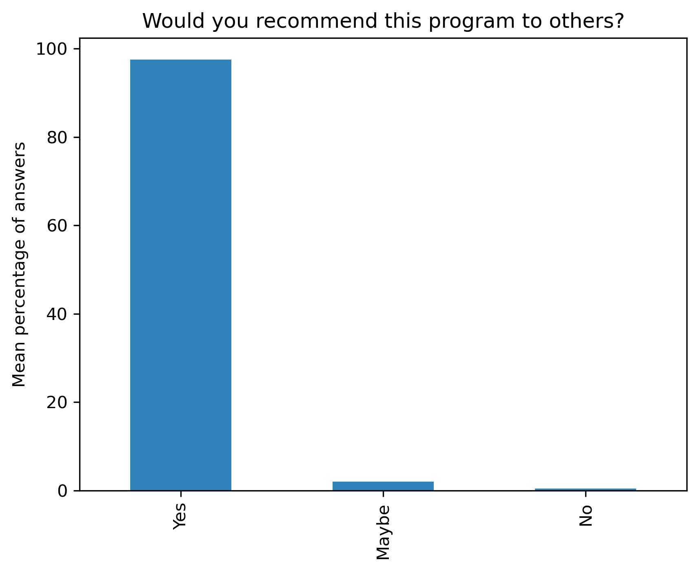
fig, ax = plt.subplots()
fig.set_dpi(300)
participant_q6_df.mean(axis=1).plot.pie()
t = plt.title(col)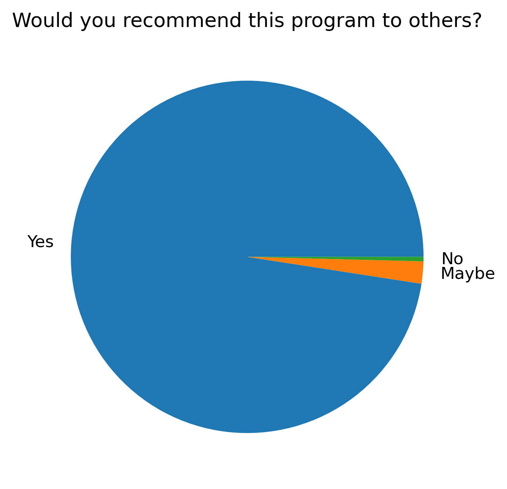
url = "https://docs.google.com/spreadsheets/d/1JOnjaojSYz8J0Yg27IS73MtraIL36BgtavJWlvBuGtI/export?format=csv"
cohort_gid = {
'OLS-1': '922543579',
'OLS-2': '293719636',
'OLS-3': '901891477',
'OLS-4': '186857041',
'OLS-5': '0',
'OLS-6': '227796069',
'OLS-7': '1608148546'
}mentor_df = {}
for c in cohort_gid:
mentor_df[c] = (pd.read_csv(f"{url}&gid={cohort_gid[c]}")
.dropna(axis=1,how='all')
.fillna("")
.replace(c, "cohort",regex=True)
.replace("I am not sure yet, but ask me later when you have launched OLS-2", "I am not sure yet but ask me later", regex=True)
.replace("I am not sure yet, but ask me later when you have launched cohort", "I am not sure yet but ask me later", regex=True)
.replace("I am not sure yet, but ask me later", "I am not sure yet but ask me later", regex=True)
.replace("Yes I'd like to return as a collaborator to run an OLS cohort for my network", "Yes I'd like to return as a collaborator to run this program in my network", regex=True)
.replace("No, I would not be able to return to OLS-2", "No I would not be able to return", regex=True)
.replace("No, I would not be able to return to cohort", "No I would not be able to return", regex=True)
.replace("No, I would not be able to return to OLS-4", "No I would not be able to return", regex=True)
.replace("I would not be able to return to OLS-3 but I am hopeful to return to OLS-4 with an active role.", "I would take a break but please keep me informed about the next cohort", regex=True)
.replace("No, but only because I really would not have the time", "No I would not be able to return", regex=True)
.replace("Maybe in OLS-7?", "I would take a break but please keep me informed about the next cohort", regex=True))Possible answers: - I felt supported as a mentor and the training offered in the cohort was adequate - I felt supported as a mentor but the training offered in the cohort can be improved - I enjoyed my participation and did not find the experience overwhelming - I found the mentorship responsibilities overwhelming - I did not feel supported as a mentor - Other
mentor_q1 = {}
other_answer = []
col = "How were your overall mentorship training and support experience in OLS?"
answers = [
"I felt supported as a mentor and the training offered in the cohort was adequate",
"I felt supported as a mentor but the training offered in the cohort can be improved",
"I enjoyed my participation and did not find the experience overwhelming",
"I found the mentorship responsibilities overwhelming",
"I did not feel supported as a mentor",
"Other"]
for c in mentor_df:
mentor_q1[c], oa = get_mcq_possible_answers_counts(col, mentor_df[c], answers)
other_answer += oa
mentor_q1_df = pd.DataFrame.from_dict(mentor_q1)
mentor_q1_df| OLS-1 | OLS-2 | OLS-3 | OLS-4 | OLS-5 | OLS-6 | OLS-7 | |
|---|---|---|---|---|---|---|---|
| I felt supported as a mentor and the training offered in the cohort was adequate | 4 | 19 | 24 | 17 | 19 | 17 | 17 |
| I felt supported as a mentor but the training offered in the cohort can be improved | 3 | 1 | 0 | 0 | 1 | 1 | 1 |
| I enjoyed my participation and did not find the experience overwhelming | 3 | 11 | 15 | 13 | 7 | 11 | 17 |
| I found the mentorship responsibilities overwhelming | 0 | 0 | 0 | 0 | 0 | 0 | 1 |
| I did not feel supported as a mentor | 0 | 0 | 0 | 0 | 0 | 0 | 0 |
| Other | 3 | 7 | 1 | 3 | 0 | 4 | 5 |
Other answers:
other_answer['I missed out on some mentor trainings (due to scheduling conflicts',
'and my feeling comfortable from previous experience mentoring for MozOL)',
'but the ones I attended were great! ',
'It would have been good to maybe have a reflection / consolidation session for mentors at the end of the programme but I really appreciated the training organised and the support from other mentors ',
'I found the experience frustrating. I think that the mentees and I failed to clarify and describe what we expected from the relationship. My feeling through the whole program was that they were looking for a mentor who gave them specific knolwedge',
'ideas for solutions to their problems - while I wanted to be more of a coach',
'someone to listen and provide structure to their discussions. I was left feeling that i had done a poor job as a mentor.',
'I found mentoring this project really inspiring. Sometimes Annalee had queries I did not know the answer to but the community allowed me to suggest others for her to engage with (thanks all!) and we talked through the challenges together.',
'I could not invest as much time as I wanted. I understimated the issue of getting to meeting in the evenings due to time differences',
'Due to circumstances',
'the mentees were not able to fully engage with the project and OLS in general.',
'enriching and overall great. ',
'I expressed some doubts and insecurity about the future relationship with my mentee becasue of age and gender difference and it was great to have Paz and Mayya checking in about how it was going :)',
'Some more (structured) communication between mentors would be great.',
'For this round of mentoring I found it tougher to engage because of other commitments. ',
'I felt supported as a mentor and the training offered in the OLS-6 was adequate',
'Maybe it could be useful for future mentors to plan their training before they meet their mentees for the first time so they feel more confident. ']participant_q1_df = 100 * participant_q1_df / participant_q1_df.sum()fig, ax = plt.subplots()
fig.set_dpi(300)
mentor_q1_df.plot.barh(ax=ax, colormap='Set1')
plt.xlabel('Percentage of answers')
plt.gca().invert_yaxis()
t = plt.title(col)
#plt.savefig('../', bbox_inches='tight')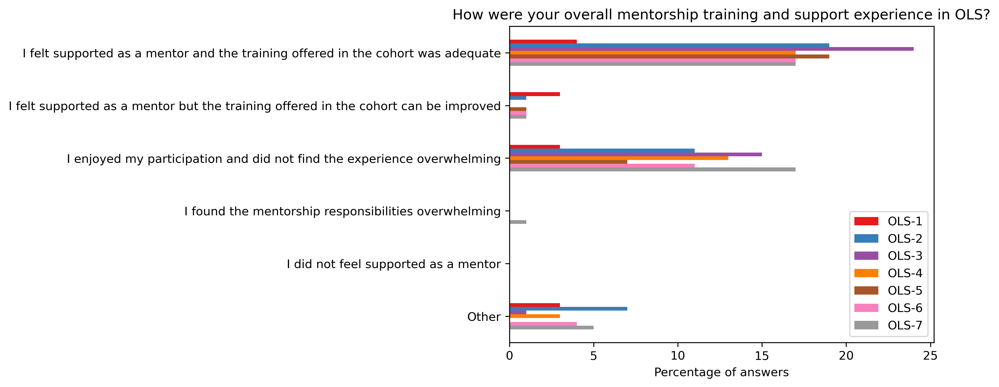
fig, ax = plt.subplots()
fig.set_dpi(300)
mentor_q1_df.mean(axis=1).plot.barh(ax=ax, color=colors['mentors'])
plt.xlabel('Mean percentage of answers')
plt.gca().invert_yaxis()
t = plt.title(col)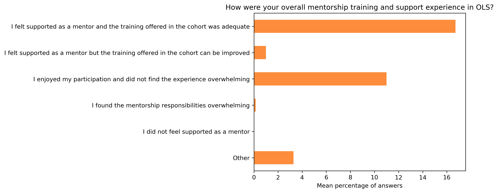
mentor_q2 = {}
other_answer = []
col = "How was your overall experience with the mentoring calls with your mentee?"
answers = [
"Mentoring calls were not structured or constructive",
"Mentoring calls were somewhat constructive",
"Mentoring calls were mostly constructive",
"Mentoring calls were always constructive"]
for c in mentor_df:
mentor_q2[c], oa = get_mcq_possible_answers_counts(col, mentor_df[c], answers)
other_answer += oa
mentor_q2_df = pd.DataFrame.from_dict(mentor_q2)
mentor_q2_df| OLS-1 | OLS-2 | OLS-3 | OLS-4 | OLS-5 | OLS-6 | OLS-7 | |
|---|---|---|---|---|---|---|---|
| Mentoring calls were not structured or constructive | 0 | 1 | 1 | 0 | 0 | 1 | 2 |
| Mentoring calls were somewhat constructive | 2 | 5 | 4 | 3 | 2 | 4 | 5 |
| Mentoring calls were mostly constructive | 4 | 13 | 8 | 10 | 10 | 9 | 4 |
| Mentoring calls were always constructive | 3 | 7 | 14 | 5 | 9 | 5 | 15 |
mentor_q2_df = 100 * mentor_q2_df / mentor_q2_df.sum()fig, ax = plt.subplots()
fig.set_dpi(300)
mentor_q2_df.plot.barh(ax=ax, colormap='Set1')
plt.xlabel('Percentage of answers')
plt.gca().invert_yaxis()
plt.title(col)
#plt.savefig('../', bbox_inches='tight')Text(0.5, 1.0, 'How was your overall experience with the mentoring calls with your mentee?')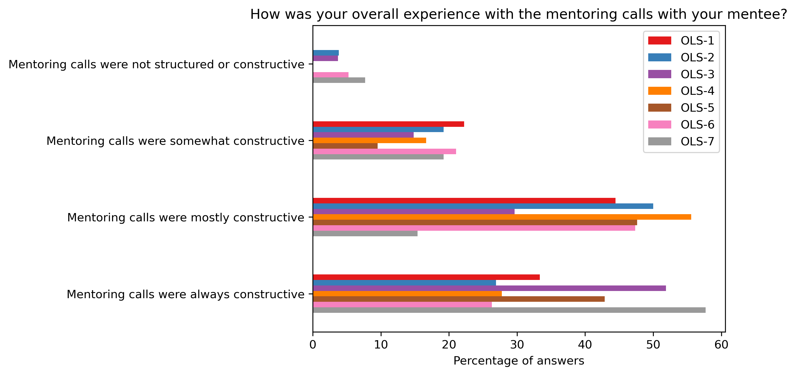
fig, ax = plt.subplots()
fig.set_dpi(300)
mentor_q2_df.mean(axis=1).plot.barh(ax=ax, color=colors['mentors'])
plt.xlabel('Mean percentage of answers')
plt.gca().invert_yaxis()
t = plt.title(col)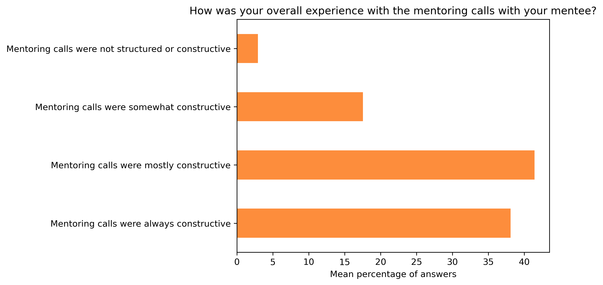
mentor_q3 = {}
other_answer = []
col = "Would you be interested in returning to the next cohort as a mentor or expert, and/or join our steering committee?"
answers = [
"Yes I'd like to return as a mentor",
"Yes I'd like to return as an expert",
"Yes I'd like to return as a collaborator to run this program in my network",
"Yes I am interesting in joining the OLS steering committee",
"I am not sure yet but ask me later",
"I would take a break but please keep me informed about the next cohort",
"No I would not be able to return",
"Other"]
for c in mentor_df:
mentor_q3[c], oa = get_mcq_possible_answers_counts(col, mentor_df[c], answers)
other_answer += oa
mentor_q3_df = pd.DataFrame.from_dict(mentor_q3)
mentor_q3_df| OLS-1 | OLS-2 | OLS-3 | OLS-4 | OLS-5 | OLS-6 | OLS-7 | |
|---|---|---|---|---|---|---|---|
| Yes I'd like to return as a mentor | 4 | 6 | 18 | 9 | 15 | 9 | 1 |
| Yes I'd like to return as an expert | 1 | 5 | 11 | 10 | 12 | 9 | 1 |
| Yes I'd like to return as a collaborator to run this program in my network | 0 | 0 | 4 | 1 | 2 | 4 | 0 |
| Yes I am interesting in joining the OLS steering committee | 0 | 0 | 0 | 6 | 3 | 5 | 0 |
| I am not sure yet but ask me later | 2 | 0 | 3 | 1 | 4 | 1 | 6 |
| I would take a break but please keep me informed about the next cohort | 0 | 7 | 1 | 2 | 0 | 2 | 0 |
| No I would not be able to return | 0 | 0 | 0 | 0 | 0 | 1 | 0 |
| Other | 2 | 6 | 11 | 2 | 3 | 5 | 73 |
Other answers:
other_answer['Yes',
"but I don't know how yet! Could be any of the three ways...",
'',
'but maybe relevant only if there is applicants from ecology / biodiversity fields like it was in OLS2',
'I have signed up as both an expert and mentor for OLS-3',
'I would like to not use platform that collects data (more details in email)',
"I've signed up as both expert and mentor but I'm happy to relay the baton and give this excellent opportunity to others.",
'I am not sure yet but ask me later when you have launched OLS-4',
'I am keen to open this up and invite more building energy researchers - this network is developing informally so I would like to plan further developing a community',
'either as a mentee',
'mentor or expert. I just need to think it through/discuss.',
'I should have more time in September to be able to put in more time into this during working hours: especially if I can get the credits for the PhDs sorted out and have some of them apply. ',
"I'd like to take a break for OLS-4",
'but please contact me for OLS-5 :)',
'I checked yes to the collaborator option',
'but actually',
'I want to know what this means exactly.',
'No',
'I would not be able to return',
'I love this community',
'I would like to continue being involved in OLS',
'but need to assess my possible time commitments over the next few months first',
'Participant',
'Also happy to be a reviewer this round (have registered already)',
'Not sure about the time/duties of the steering committee',
'but would be happy to know more about it',
'',
'Yes',
"I'd like to return as a mentor",
"I'd like to return as an expert",
'I am interesting in joining the OLS steering committee',
"I'd like to return as a collaborator to run this program in my network",
'No',
'I would not be able to return to OLS-8',
'I would be happy to help out in anyway. There is wonderful overlap with the eLife Ambassadors community. Looking forward to discussing',
'but can be a mentor in OLS-8 if needed',
'Happy to leave mentoring to other people',
"I've been thinking on a way to get the students on my community to participate on OLS regularly. Let's chat!",
'I may join back as a mentor after my defence (probably after september.))',
'I am on the last leg of my PhD so I dont have abandwidth to take up other commitments. While I woould like to remain a pat of the network ',
'I won’t have time :/ ']mentor_q3_df = 100 * mentor_q3_df / mentor_q3_df.sum()fig, ax = plt.subplots()
fig.set_dpi(300)
mentor_q3_df.plot.barh(ax=ax, colormap='Set1')
plt.xlabel('Percentage of answers')
plt.gca().invert_yaxis()
t = plt.title(col)
#plt.savefig('../', bbox_inches='tight')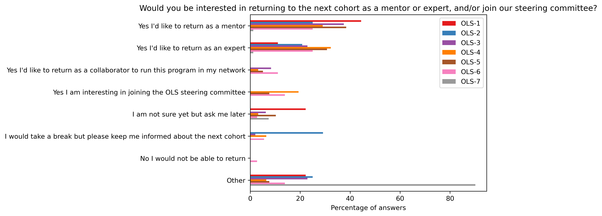
fig, ax = plt.subplots()
fig.set_dpi(300)
mentor_q3_df.mean(axis=1).plot.barh(ax=ax, color=colors['mentors'])
plt.xlabel('Mean percentage of answers')
plt.gca().invert_yaxis()
t = plt.title(col)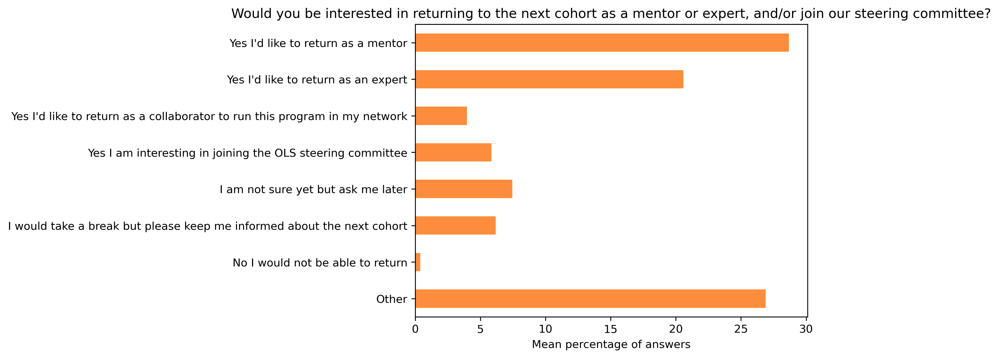
Possible answers: - Yes they were able to engage - No they had difficulty engaging or attending calls - Other
mentor_q4 = {}
other_answer = []
col = "Do you think your mentee was able to effectively engage with OLS throughout the program?"
answers = [
"Yes, they were able to engage",
"No, they had difficulty engaging or attending calls",
"Other"]
for c in mentor_df:
if col in mentor_df[c]:
mentor_q4[c], oa = get_question_possible_answers_counts(col, mentor_df[c], answers)
other_answer += oa
mentor_q4_df = pd.DataFrame.from_dict(mentor_q4)
mentor_q4_df| OLS-4 | OLS-5 | OLS-6 | OLS-7 | |
|---|---|---|---|---|
| Yes, they were able to engage | 9 | 14 | 7 | 19 |
| No, they had difficulty engaging or attending calls | 6 | 4 | 7 | 6 |
| Other | 3 | 3 | 5 | 1 |
Other answers:
other_answer['I think they were able to engage most of the time. They often had to catch up between the calls and what they effectively used in their project.',
"I think Arent was very much capable to effectively engage but I also received his feedback that he wished he had more time to really get the most out of it. I guess that's life :) Gill had a very busy time with teaching and the project changed focus in the middle of OLS so it was a bit more rough there. I think she managed to get at least something out of the programme but she has also been out of touch over christmas so I'm not sure if she's managing to graduate. I think in general people are just worn out over the pandemic: I myself was also not at my best in December and feel a bit more recharged right now. ",
'I think she was able to engage but did not attend a number of cohort calls, My guess (but take this as my hypothesis) is that thai partly related to being busy, and partly to the nature of the project, which involved organizing an event and thus some of the topics of the cohort calls would not have been applicable.',
"They were engaged with mentor calls, didn't manage to attend as many cohort calls as they wanted I think and probably also struggled with time to dig into all the material.",
'Perhaps not all members of the team but most of them',
'',
"I think Alden struggled in the beginning to keep up with all the homework, especially since her project wasn't actually funded yet so she was limited in what she could actually implement during the OLS program.",
'Did not manage to engage with Mahmood Usman, so not sure. ',
"she couldn't engage as much as she wanted",
'I think they were able to engage enough with the materials, a little less with th community per se becasue of language barriers',
'no, he had personal difficulty engaging or attending calls related to his VISA ',
'They had difficulty engaging with the mentorship side of the program but they were very active attending the community calls.']mentor_q4_df = 100 * mentor_q4_df / mentor_q4_df.sum()fig, ax = plt.subplots()
fig.set_dpi(300)
mentor_q4_df.plot.barh(ax=ax, colormap='Set1')
plt.xlabel('Percentage of answers')
plt.gca().invert_yaxis()
t = plt.title(col)
#plt.savefig('../', bbox_inches='tight')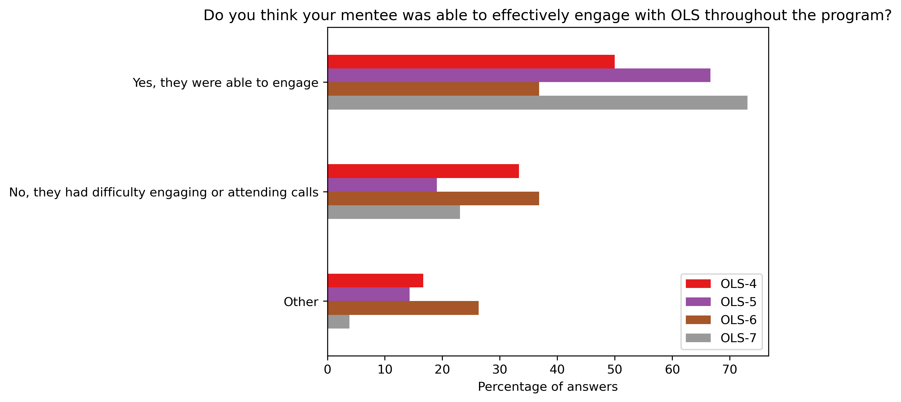
fig, ax = plt.subplots()
fig.set_dpi(300)
mentor_q4_df.mean(axis=1).plot.barh(ax=ax, color=colors['mentors'])
plt.xlabel('Mean percentage of answers')
plt.gca().invert_yaxis()
t = plt.title(col)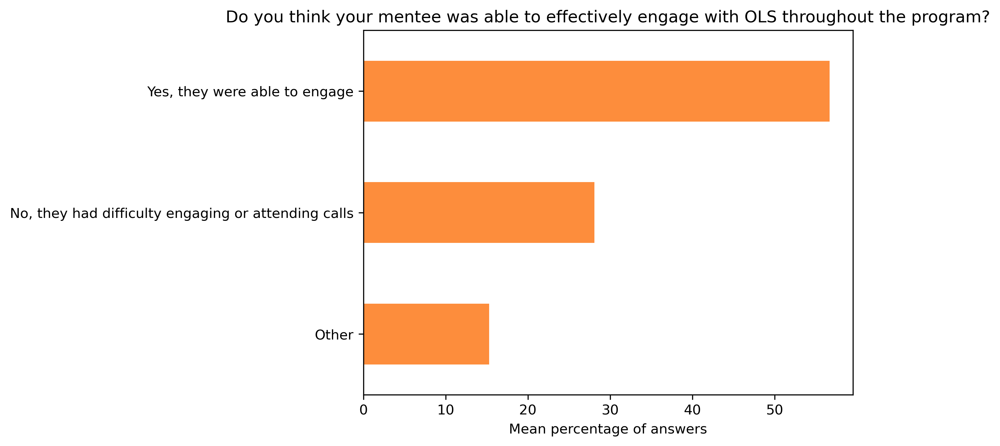
fig, ax = plt.subplots()
fig.set_dpi(300)
mentor_q4_df.mean(axis=1).plot.pie()
t = plt.title(col)